gpu_info = !nvidia-smi
gpu_info = '\n'.join(gpu_info)
if gpu_info.find('failed') >= 0:
print('Not connected to a GPU')
else:
print(gpu_info)
Tue May 20 00:05:45 2025
+-----------------------------------------------------------------------------------------+
| NVIDIA-SMI 576.40 Driver Version: 576.40 CUDA Version: 12.9 |
|-----------------------------------------+------------------------+----------------------+
| GPU Name Driver-Model | Bus-Id Disp.A | Volatile Uncorr. ECC |
| Fan Temp Perf Pwr:Usage/Cap | Memory-Usage | GPU-Util Compute M. |
| | | MIG M. |
|=========================================+========================+======================|
| 0 NVIDIA GeForce GTX 1650 WDDM | 00000000:01:00.0 Off | N/A |
| N/A 56C P0 15W / 50W | 800MiB / 4096MiB | 1% Default |
| | | N/A |
+-----------------------------------------+------------------------+----------------------+
+-----------------------------------------------------------------------------------------+
| Processes: |
| GPU GI CI PID Type Process name GPU Memory |
| ID ID Usage |
|=========================================================================================|
| 0 N/A N/A 1904 C+G ...y\StartMenuExperienceHost.exe N/A |
| 0 N/A N/A 6456 C+G ....0.3240.76\msedgewebview2.exe N/A |
| 0 N/A N/A 8172 C+G ...4__8wekyb3d8bbwe\ms-teams.exe N/A |
| 0 N/A N/A 10640 C+G ...ms\Microsoft VS Code\Code.exe N/A |
| 0 N/A N/A 10788 C+G ...4__8wekyb3d8bbwe\ms-teams.exe N/A |
| 0 N/A N/A 11216 C+G ..._cw5n1h2txyewy\SearchHost.exe N/A |
| 0 N/A N/A 12528 C+G ...x64__dt26b99r8h8gj\RtkUWP.exe N/A |
| 0 N/A N/A 12544 C+G ...5n1h2txyewy\TextInputHost.exe N/A |
| 0 N/A N/A 13232 C+G ...App_cw5n1h2txyewy\LockApp.exe N/A |
| 0 N/A N/A 14012 C+G ...4__8wekyb3d8bbwe\ms-teams.exe N/A |
| 0 N/A N/A 14408 C+G ...s\Mozilla Firefox\firefox.exe N/A |
| 0 N/A N/A 15176 C+G ...s\Mozilla Firefox\firefox.exe N/A |
| 0 N/A N/A 18416 C+G ....0.3240.76\msedgewebview2.exe N/A |
| 0 N/A N/A 20092 C+G ...icrosoft.AAD.BrokerPlugin.exe N/A |
+-----------------------------------------------------------------------------------------+
Aplicacion modelos#
!git clone https://github.com/rapidsai/rapidsai-csp-utils.git
!python rapidsai-csp-utils/colab/pip-install.py
fatal: destination path 'rapidsai-csp-utils' already exists and is not an empty directory.
""uv pip install --system pynvml"" no se reconoce como un comando interno o externo,
programa o archivo por lotes ejecutable.
Traceback (most recent call last):
File "C:\Users\Alejandro\Desktop\Machine_Learning_Algs\TheRiseOfTheMachine\mybook\rapidsai-csp-utils\colab\pip-install.py", line 7, in <module>
import pynvml
ModuleNotFoundError: No module named 'pynvml'
During handling of the above exception, another exception occurred:
Traceback (most recent call last):
File "C:\Users\Alejandro\Desktop\Machine_Learning_Algs\TheRiseOfTheMachine\mybook\rapidsai-csp-utils\colab\pip-install.py", line 16, in <module>
import pynvml
ModuleNotFoundError: No module named 'pynvml'
pip install ucimlrepo
Requirement already satisfied: ucimlrepo in d:\miniconda\lib\site-packages (0.0.7)
Requirement already satisfied: pandas>=1.0.0 in d:\miniconda\lib\site-packages (from ucimlrepo) (2.2.3)
Requirement already satisfied: certifi>=2020.12.5 in d:\miniconda\lib\site-packages (from ucimlrepo) (2025.1.31)
Requirement already satisfied: numpy>=1.26.0 in d:\miniconda\lib\site-packages (from pandas>=1.0.0->ucimlrepo) (2.2.4)
Requirement already satisfied: python-dateutil>=2.8.2 in d:\miniconda\lib\site-packages (from pandas>=1.0.0->ucimlrepo) (2.9.0.post0)
Requirement already satisfied: pytz>=2020.1 in d:\miniconda\lib\site-packages (from pandas>=1.0.0->ucimlrepo) (2025.1)
Requirement already satisfied: tzdata>=2022.7 in d:\miniconda\lib\site-packages (from pandas>=1.0.0->ucimlrepo) (2025.1)
Requirement already satisfied: six>=1.5 in d:\miniconda\lib\site-packages (from python-dateutil>=2.8.2->pandas>=1.0.0->ucimlrepo) (1.17.0)
Note: you may need to restart the kernel to use updated packages.
WARNING: Ignoring invalid distribution ~andas (D:\Miniconda\Lib\site-packages)
WARNING: Ignoring invalid distribution ~andas (D:\Miniconda\Lib\site-packages)
WARNING: Ignoring invalid distribution ~andas (D:\Miniconda\Lib\site-packages)
import warnings
warnings.filterwarnings('ignore')
import numpy as np
import matplotlib.pyplot as plt
import time
import pandas as pd
import numpy as np
import matplotlib.pyplot as plt
from ucimlrepo import fetch_ucirepo
covertype = fetch_ucirepo(id=31)
---------------------------------------------------------------------------
AttributeError Traceback (most recent call last)
Cell In[6], line 1
----> 1 covertype = fetch_ucirepo(id=31)
File D:\Miniconda\Lib\site-packages\ucimlrepo\fetch.py:97, in fetch_ucirepo(name, id)
95 df = None
96 try:
---> 97 df = pd.read_csv(data_url)
98 except (urllib.error.URLError, urllib.error.HTTPError):
99 raise DatasetNotFoundError('Error reading data csv file for "{}" dataset (id={}).'.format(name, id))
AttributeError: module 'pandas' has no attribute 'read_csv'
X = covertype.data.features
y = covertype.data.targets
X.drop(["Hillshade_9am"], axis=1, inplace=True)
from sklearn.model_selection import train_test_split, StratifiedKFold
# Dividir datos
X_train, X_test, y_train, y_test = train_test_split(X, y, test_size=0.2, random_state=42)
loaded_SMOTE = pd.read_csv('datos_smote.csv')
X_train_SM = loaded_SMOTE.drop('Cover_Type', axis=1)
y_train_SM = loaded_SMOTE['Cover_Type']
loaded_ADA = pd.read_csv('datos_ada.csv')
X_train_ADA = loaded_ADA.drop('Cover_Type', axis=1)
y_train_ADA = loaded_ADA['Cover_Type']
from sklearn.metrics import accuracy_score, confusion_matrix, classification_report, roc_curve, auc, roc_auc_score
from sklearn.pipeline import Pipeline
from sklearn.preprocessing import StandardScaler
scaler = StandardScaler()
X_test_sc = scaler.fit_transform(X_test)
def metricas(model, scaler = None):
if scaler == None:
y_pred = model.predict(X_test)
else:
y_pred = model.predict(scaler.fit_transform(X_test))
# Precisión del modelo
accuracy = accuracy_score(y_test, y_pred)
print(f"Precisión: {accuracy * 100:.2f}%")
# Matriz de confusión
print("Matriz de confusión:")
print(confusion_matrix(y_test, y_pred))
# Reporte de clasificación
print("Reporte de clasificación:")
print(classification_report(y_test, y_pred))
from itertools import cycle
from sklearn.preprocessing import LabelBinarizer
from sklearn.metrics import RocCurveDisplay
label_binarizer = LabelBinarizer().fit(y_train)
y_onehot_test = label_binarizer.transform(y_test)
def LAUC_curvas(model, scaler = None, linScv = False):
n_classes = 7
if linScv:
y_score = model.decision_function(X_test_sc)
elif scaler == None:
y_score = model.predict_proba(X_test)
else:
y_score = model.predict_proba(scaler.fit_transform(X_test))
if hasattr(y_score, 'to_numpy'):
y_score = y_score.to_numpy()
# store the fpr, tpr, and roc_auc for all averaging strategies
fpr, tpr, roc_auc = dict(), dict(), dict()
# Compute micro-average ROC curve and ROC area
fpr["micro"], tpr["micro"], _ = roc_curve(y_onehot_test.ravel(), y_score.ravel())
roc_auc["micro"] = auc(fpr["micro"], tpr["micro"])
print(f"Micro-averaged One-vs-Rest ROC AUC score:\n{roc_auc['micro']:.2f}")
for i in range(n_classes):
fpr[i], tpr[i], _ = roc_curve(y_onehot_test[:, i], y_score[:, i])
roc_auc[i] = auc(fpr[i], tpr[i])
fpr_grid = np.linspace(0.0, 1.0, 1000)
# Interpolate all ROC curves at these points
mean_tpr = np.zeros_like(fpr_grid)
for i in range(n_classes):
mean_tpr += np.interp(fpr_grid, fpr[i], tpr[i]) # linear interpolation
# Average it and compute AUC
mean_tpr /= n_classes
fpr["macro"] = fpr_grid
tpr["macro"] = mean_tpr
roc_auc["macro"] = auc(fpr["macro"], tpr["macro"])
print(f"Macro-averaged One-vs-Rest ROC AUC score:\n{roc_auc['macro']:.2f}")
fig, ax = plt.subplots(figsize=(6, 6))
plt.plot(
fpr["micro"],
tpr["micro"],
label=f"micro-average ROC curve (AUC = {roc_auc['micro']:.2f})",
color="deeppink",
linestyle=":",
linewidth=4,
)
plt.plot(
fpr["macro"],
tpr["macro"],
label=f"macro-average ROC curve (AUC = {roc_auc['macro']:.2f})",
color="navy",
linestyle=":",
linewidth=4,
)
colors = cycle(["aqua", "darkorange", "cornflowerblue", "lime", "olive", "navy", "maroon"])
for class_id, color in zip(range(n_classes), colors):
RocCurveDisplay.from_predictions(
y_onehot_test[:, class_id],
y_score[:, class_id],
name=f"ROC curve for Class {class_id + 1}",
color=color,
ax=ax,
)
_ = ax.set(
xlabel="False Positive Rate",
ylabel="True Positive Rate",
title="Extension of Receiver Operating Characteristic\nto One-vs-Rest multiclass",
)
from sklearn.model_selection import cross_val_score, GridSearchCV
import matplotlib
matplotlib.rc_file_defaults()
K Nearest Neighbors#
from sklearn.neighbors import KNeighborsClassifier
clf = KNeighborsClassifier(algorithm = "kd_tree", n_jobs = -1)
pipeline = Pipeline([
('scaler', None),
('model', clf)
])
neighbors_settings = range(1, 13)
param_grid = {'model__n_neighbors': neighbors_settings}
grid_search = GridSearchCV(
estimator=pipeline,
param_grid=param_grid,
cv=StratifiedKFold(5),
scoring='roc_auc_ovr',
n_jobs=-1, # Paralelizar la búsqueda
verbose=1
)
Dataset desbalanceado
grid_search.fit(X_train, y_train)
Fitting 5 folds for each of 12 candidates, totalling 60 fits
GridSearchCV(cv=StratifiedKFold(n_splits=5, random_state=None, shuffle=False),
estimator=Pipeline(steps=[('scaler', None),
('model',
KNeighborsClassifier(algorithm='kd_tree',
n_jobs=-1))]),
n_jobs=-1, param_grid={'model__n_neighbors': range(1, 13)},
scoring='roc_auc_ovr', verbose=1)In a Jupyter environment, please rerun this cell to show the HTML representation or trust the notebook. On GitHub, the HTML representation is unable to render, please try loading this page with nbviewer.org.
GridSearchCV(cv=StratifiedKFold(n_splits=5, random_state=None, shuffle=False),
estimator=Pipeline(steps=[('scaler', None),
('model',
KNeighborsClassifier(algorithm='kd_tree',
n_jobs=-1))]),
n_jobs=-1, param_grid={'model__n_neighbors': range(1, 13)},
scoring='roc_auc_ovr', verbose=1)Pipeline(steps=[('scaler', None),
('model',
KNeighborsClassifier(algorithm='kd_tree', n_jobs=-1,
n_neighbors=11))])None
KNeighborsClassifier(algorithm='kd_tree', n_jobs=-1, n_neighbors=11)
results = grid_search.cv_results_
scores = results['mean_test_score']
plt.plot(neighbors_settings, scores, label="Mean cross val scores")
plt.ylabel("Accuracy")
plt.xlabel("n_neighbors")
plt.legend()
<matplotlib.legend.Legend at 0x7f5371439990>
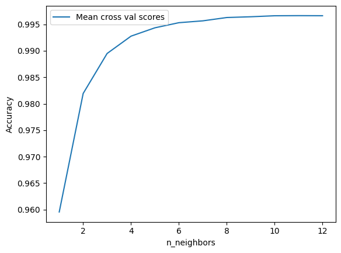
print("Mejores hiperparámetros:", grid_search.best_params_)
# Evaluar el mejor modelo
best_model = grid_search.best_estimator_
metricas(best_model)
LAUC_curvas(best_model)
Mejores hiperparámetros: {'model__n_neighbors': 11}
Precisión: 95.99%
Matriz de confusión:
[[40797 1629 1 0 37 5 88]
[ 1389 54816 76 0 133 70 16]
[ 5 120 6830 17 5 144 0]
[ 0 1 102 373 0 50 0]
[ 26 230 23 0 1707 9 0]
[ 7 129 186 9 5 3153 0]
[ 124 22 0 0 1 0 3868]]
Reporte de clasificación:
precision recall f1-score support
1 0.96 0.96 0.96 42557
2 0.96 0.97 0.97 56500
3 0.95 0.96 0.95 7121
4 0.93 0.71 0.81 526
5 0.90 0.86 0.88 1995
6 0.92 0.90 0.91 3489
7 0.97 0.96 0.97 4015
accuracy 0.96 116203
macro avg 0.94 0.90 0.92 116203
weighted avg 0.96 0.96 0.96 116203
Micro-averaged One-vs-Rest ROC AUC score:
1.00
Macro-averaged One-vs-Rest ROC AUC score:
1.00
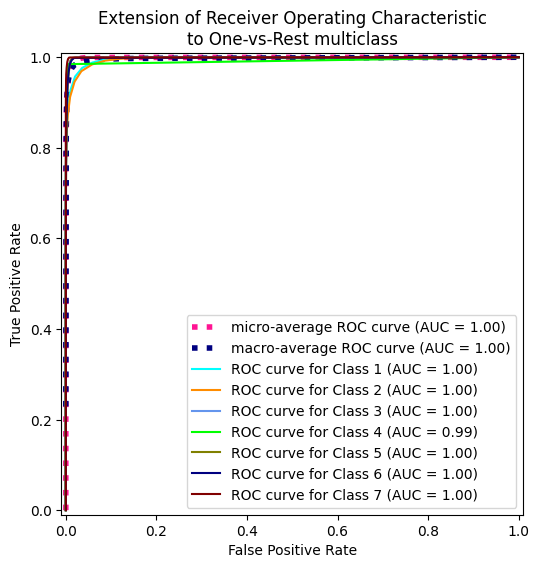
Dataset balanceado con SMOTE
start = time.process_time() # Inicia el contador de CPU time
grid_search.fit(X_train_SM, y_train_SM)
end = time.process_time() # Finaliza el contador de CPU time
print(f"CPU Time: {end - start} segundos")
Fitting 5 folds for each of 12 candidates, totalling 60 fits
CPU Time: 30.122877766000002 segundos
results = grid_search.cv_results_
scores = results['mean_test_score']
plt.plot(neighbors_settings, scores, label="Mean cross val scores")
plt.ylabel("Accuracy")
plt.xlabel("n_neighbors")
plt.legend()
<matplotlib.legend.Legend at 0x7f53e902b8d0>
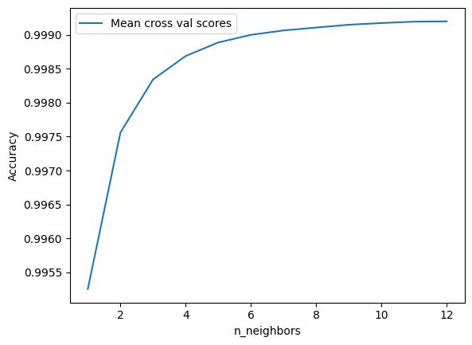
print("Mejores hiperparámetros:", grid_search.best_params_)
# Evaluar el mejor modelo
best_model = grid_search.best_estimator_
metricas(best_model)
LAUC_curvas(best_model)
Mejores hiperparámetros: {'model__n_neighbors': 12}
Precisión: 94.75%
Matriz de confusión:
[[41167 814 6 0 139 16 415]
[ 2664 52224 349 2 824 353 84]
[ 0 6 6883 64 22 146 0]
[ 0 0 24 482 0 20 0]
[ 0 9 5 0 1975 5 1]
[ 0 5 67 41 7 3369 0]
[ 8 0 0 0 0 0 4007]]
Reporte de clasificación:
precision recall f1-score support
1 0.94 0.97 0.95 42557
2 0.98 0.92 0.95 56500
3 0.94 0.97 0.95 7121
4 0.82 0.92 0.86 526
5 0.67 0.99 0.80 1995
6 0.86 0.97 0.91 3489
7 0.89 1.00 0.94 4015
accuracy 0.95 116203
macro avg 0.87 0.96 0.91 116203
weighted avg 0.95 0.95 0.95 116203
Micro-averaged One-vs-Rest ROC AUC score:
1.00
Macro-averaged One-vs-Rest ROC AUC score:
0.99
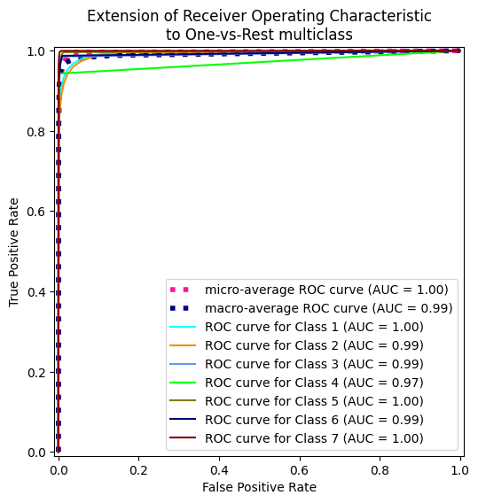
Dataset balanceado con ADA
start = time.process_time() # Inicia el contador de CPU time
grid_search.fit(X_train_ADA, y_train_ADA)
end = time.process_time() # Finaliza el contador de CPU time
print(f"CPU Time: {end - start} segundos")
Fitting 5 folds for each of 12 candidates, totalling 60 fits
CPU Time: 26.95348169800002 segundos
results = grid_search.cv_results_
scores = results['mean_test_score']
plt.plot(neighbors_settings, scores, label="Mean cross val scores")
plt.ylabel("Accuracy")
plt.xlabel("n_neighbors")
plt.legend()
<matplotlib.legend.Legend at 0x7f53e7f08a10>
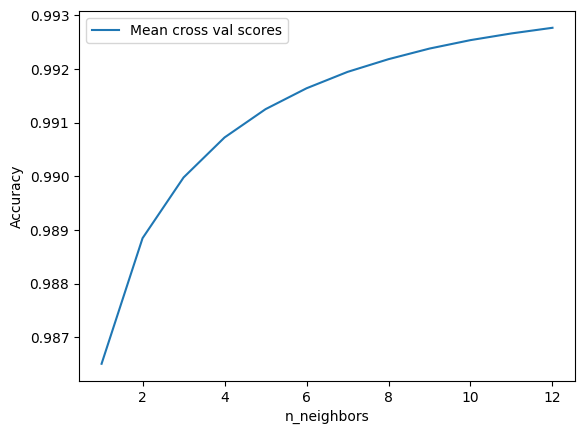
print("Mejores hiperparámetros:", grid_search.best_params_)
# Evaluar el mejor modelo
best_model_ADA = grid_search.best_estimator_
metricas(best_model_ADA)
LAUC_curvas(best_model_ADA)
Mejores hiperparámetros: {'model__n_neighbors': 12}
Precisión: 93.46%
Matriz de confusión:
[[41945 159 6 0 89 11 347]
[ 4837 49911 444 2 849 363 94]
[ 1 1 6941 61 14 103 0]
[ 0 0 35 466 0 25 0]
[ 1 7 9 0 1968 9 1]
[ 0 3 83 34 7 3362 0]
[ 9 0 0 0 0 0 4006]]
Reporte de clasificación:
precision recall f1-score support
1 0.90 0.99 0.94 42557
2 1.00 0.88 0.94 56500
3 0.92 0.97 0.95 7121
4 0.83 0.89 0.86 526
5 0.67 0.99 0.80 1995
6 0.87 0.96 0.91 3489
7 0.90 1.00 0.95 4015
accuracy 0.93 116203
macro avg 0.87 0.95 0.91 116203
weighted avg 0.94 0.93 0.94 116203
Micro-averaged One-vs-Rest ROC AUC score:
0.99
Macro-averaged One-vs-Rest ROC AUC score:
0.99
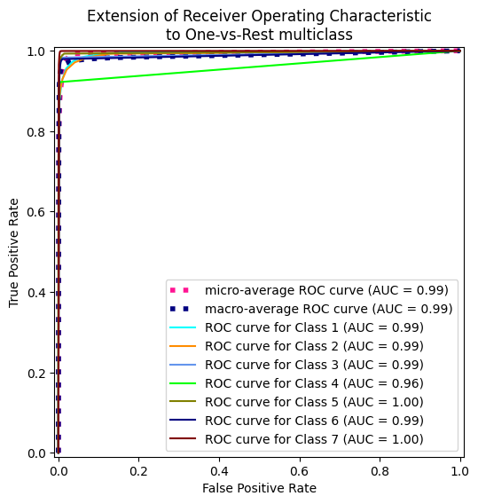
Mejor modelo
knn = KNeighborsClassifier(n_neighbors = 1, algorithm = "kd_tree", n_jobs = -1)
start = time.process_time() # Inicia el contador de CPU time
knn.fit(X_train_SM, y_train_SM)
metricas(knn)
LAUC_curvas(knn)
end = time.process_time() # Finaliza el contador de CPU time
print(f"CPU Time: {end - start} segundos")
Regresion Logistica#
from sklearn.linear_model import LogisticRegression
X_train_sc = scaler.fit_transform(X_train, y_train)
print(np.logspace(-3, 3, 7))
[1.e-03 1.e-02 1.e-01 1.e+00 1.e+01 1.e+02 1.e+03]
Dataset desbalanceado
pipeline = Pipeline([
('scaler', StandardScaler()), # Escalado para que L2 funcione correctamente
('model', LogisticRegression(penalty='l2', solver='lbfgs', max_iter=1000, n_jobs = -1, multi_class = "ovr", random_state = 42))
])
param_grid = {
'model__C': np.logspace(-3, 3, 7), # Inverso de la fuerza de regularización
'model__class_weight': [None]
}
grid_search = GridSearchCV(
estimator=pipeline,
param_grid=param_grid,
scoring='roc_auc_ovr',
cv=StratifiedKFold(5),
verbose = 1
)
grid_search.fit(X_train, y_train)
print("Mejores hiperparámetros:", grid_search.best_params_)
# Evaluar el mejor modelo
best_model = grid_search.best_estimator_
Fitting 5 folds for each of 7 candidates, totalling 35 fits
Mejores hiperparámetros: {'model__C': np.float64(1.0), 'model__class_weight': None}
metricas(best_model)
LAUC_curvas(best_model)
Precisión: 71.56%
Matriz de confusión:
[[29436 12274 35 0 2 0 810]
[ 9990 45001 1267 2 63 110 67]
[ 0 743 6146 66 0 166 0]
[ 0 0 336 146 0 44 0]
[ 45 1711 206 0 27 6 0]
[ 0 1250 1962 28 5 244 0]
[ 1816 31 17 0 0 0 2151]]
Reporte de clasificación:
precision recall f1-score support
1 0.71 0.69 0.70 42557
2 0.74 0.80 0.77 56500
3 0.62 0.86 0.72 7121
4 0.60 0.28 0.38 526
5 0.28 0.01 0.03 1995
6 0.43 0.07 0.12 3489
7 0.71 0.54 0.61 4015
accuracy 0.72 116203
macro avg 0.58 0.46 0.47 116203
weighted avg 0.70 0.72 0.70 116203
Micro-averaged One-vs-Rest ROC AUC score:
0.96
Macro-averaged One-vs-Rest ROC AUC score:
0.93
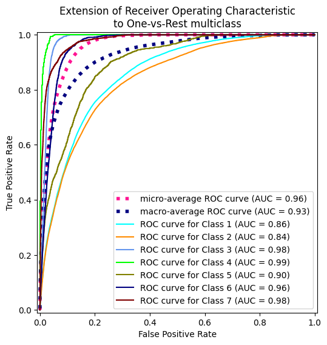
results = grid_search.cv_results_
scores = results['mean_test_score']
print(scores)
[0.92628789 0.9296591 0.930125 0.93016565 0.93016041 0.9301623
0.93016407]
Class weight balanced
param_gridB = {
'model__C': np.logspace(-3, 3, 7), # Inverso de la fuerza de regularización
'model__class_weight': ['balanced']
}
grid_search = GridSearchCV(
estimator=pipeline,
param_grid=param_gridB,
scoring='roc_auc_ovr',
cv=StratifiedKFold(5),
verbose = 1
)
grid_search.fit(X_train, y_train)
print("Mejores hiperparámetros:", grid_search.best_params_)
# Evaluar el mejor modelo
best_model_B = grid_search.best_estimator_
Fitting 5 folds for each of 7 candidates, totalling 35 fits
Mejores hiperparámetros: {'model__C': np.float64(1000.0), 'model__class_weight': 'balanced'}
metricas(best_model_B)
LAUC_curvas(best_model_B)
Precisión: 64.04%
Matriz de confusión:
[[29002 8127 22 0 1030 245 4131]
[12731 34935 1229 26 5857 1414 308]
[ 0 101 3861 441 784 1934 0]
[ 0 0 163 293 0 70 0]
[ 39 644 185 0 1061 66 0]
[ 0 195 892 132 384 1886 0]
[ 611 6 17 0 0 0 3381]]
Reporte de clasificación:
precision recall f1-score support
1 0.68 0.68 0.68 42557
2 0.79 0.62 0.70 56500
3 0.61 0.54 0.57 7121
4 0.33 0.56 0.41 526
5 0.12 0.53 0.19 1995
6 0.34 0.54 0.41 3489
7 0.43 0.84 0.57 4015
accuracy 0.64 116203
macro avg 0.47 0.62 0.51 116203
weighted avg 0.70 0.64 0.66 116203
Micro-averaged One-vs-Rest ROC AUC score:
0.94
Macro-averaged One-vs-Rest ROC AUC score:
0.92
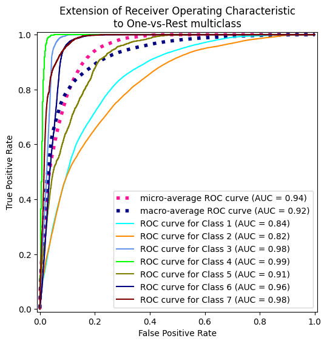
from cuml.linear_model import LogisticRegression as cuLogisticRegression
from cuml.svm import LinearSVC as cuLinearSVC
from cuml.preprocessing import StandardScaler as cuStandardScaler
import cudf
X_train_gpu = cudf.DataFrame(X_train)
y_train_gpu = cudf.DataFrame(y_train)
X_train_SM_gpu = cudf.DataFrame(X_train_SM)
y_train_SM_gpu = cudf.DataFrame(y_train_SM)
# 1. Definir pipeline con cuML (GPU)
pipeline = Pipeline([
('scaler', cuStandardScaler()), # Escalado en GPU
('model', None) # Modelo se definirá en el grid
])
# 2. Espacio de búsqueda de hiperparámetros
param_grid = {
# Regresión Logística L1 (GPU)
'model': [cuLogisticRegression(penalty='l1', solver ='qn')],
'model__C': np.logspace(-3, 3, 7), # 0.001 a 1000
'model__max_iter': [5000],
'model__class_weight': ['balanced']
}
# 3. Configurar GridSearch
grid_search = GridSearchCV(
estimator=pipeline,
param_grid=param_grid,
scoring='roc_auc_ovr',
cv=5, # Reducir CV para mayor velocidad
n_jobs=1, # cuML no soporta n_jobs
verbose=2
)
# 4. Entrenamiento en GPU
print("Iniciando entrenamiento con GPU...")
grid_search.fit(X_train_gpu, y_train_gpu)
# Resultados
print(f"\nMejor modelo: {grid_search.best_params_}")
print(f"Accuracy: {grid_search.best_score_:.4f}")
Iniciando entrenamiento con GPU...
Fitting 5 folds for each of 7 candidates, totalling 35 fits
[CV] END model=LogisticRegression(), model__C=0.001, model__class_weight=balanced, model__max_iter=5000; total time= 8.2s
[CV] END model=LogisticRegression(), model__C=0.001, model__class_weight=balanced, model__max_iter=5000; total time= 7.9s
[CV] END model=LogisticRegression(), model__C=0.001, model__class_weight=balanced, model__max_iter=5000; total time= 10.2s
[CV] END model=LogisticRegression(), model__C=0.001, model__class_weight=balanced, model__max_iter=5000; total time= 9.6s
[CV] END model=LogisticRegression(), model__C=0.001, model__class_weight=balanced, model__max_iter=5000; total time= 8.7s
[CV] END model=LogisticRegression(), model__C=0.01, model__class_weight=balanced, model__max_iter=5000; total time= 17.0s
[CV] END model=LogisticRegression(), model__C=0.01, model__class_weight=balanced, model__max_iter=5000; total time= 18.7s
[CV] END model=LogisticRegression(), model__C=0.01, model__class_weight=balanced, model__max_iter=5000; total time= 26.3s
[CV] END model=LogisticRegression(), model__C=0.01, model__class_weight=balanced, model__max_iter=5000; total time= 15.8s
[CV] END model=LogisticRegression(), model__C=0.01, model__class_weight=balanced, model__max_iter=5000; total time= 24.3s
[CV] END model=LogisticRegression(), model__C=0.1, model__class_weight=balanced, model__max_iter=5000; total time= 32.8s
[CV] END model=LogisticRegression(), model__C=0.1, model__class_weight=balanced, model__max_iter=5000; total time= 24.9s
[CV] END model=LogisticRegression(), model__C=0.1, model__class_weight=balanced, model__max_iter=5000; total time= 30.3s
[CV] END model=LogisticRegression(), model__C=0.1, model__class_weight=balanced, model__max_iter=5000; total time= 28.3s
[CV] END model=LogisticRegression(), model__C=0.1, model__class_weight=balanced, model__max_iter=5000; total time= 33.6s
[CV] END model=LogisticRegression(), model__C=1.0, model__class_weight=balanced, model__max_iter=5000; total time= 18.8s
[CV] END model=LogisticRegression(), model__C=1.0, model__class_weight=balanced, model__max_iter=5000; total time= 17.0s
[CV] END model=LogisticRegression(), model__C=1.0, model__class_weight=balanced, model__max_iter=5000; total time= 22.4s
[CV] END model=LogisticRegression(), model__C=1.0, model__class_weight=balanced, model__max_iter=5000; total time= 17.6s
[CV] END model=LogisticRegression(), model__C=1.0, model__class_weight=balanced, model__max_iter=5000; total time= 18.3s
[CV] END model=LogisticRegression(), model__C=10.0, model__class_weight=balanced, model__max_iter=5000; total time= 16.3s
[CV] END model=LogisticRegression(), model__C=10.0, model__class_weight=balanced, model__max_iter=5000; total time= 23.3s
[CV] END model=LogisticRegression(), model__C=10.0, model__class_weight=balanced, model__max_iter=5000; total time= 18.8s
[CV] END model=LogisticRegression(), model__C=10.0, model__class_weight=balanced, model__max_iter=5000; total time= 16.6s
[CV] END model=LogisticRegression(), model__C=10.0, model__class_weight=balanced, model__max_iter=5000; total time= 16.9s
[CV] END model=LogisticRegression(), model__C=100.0, model__class_weight=balanced, model__max_iter=5000; total time= 17.0s
[CV] END model=LogisticRegression(), model__C=100.0, model__class_weight=balanced, model__max_iter=5000; total time= 18.6s
[CV] END model=LogisticRegression(), model__C=100.0, model__class_weight=balanced, model__max_iter=5000; total time= 18.5s
[CV] END model=LogisticRegression(), model__C=100.0, model__class_weight=balanced, model__max_iter=5000; total time= 18.2s
[CV] END model=LogisticRegression(), model__C=100.0, model__class_weight=balanced, model__max_iter=5000; total time= 18.3s
[CV] END model=LogisticRegression(), model__C=1000.0, model__class_weight=balanced, model__max_iter=5000; total time= 18.8s
[CV] END model=LogisticRegression(), model__C=1000.0, model__class_weight=balanced, model__max_iter=5000; total time= 17.3s
[CV] END model=LogisticRegression(), model__C=1000.0, model__class_weight=balanced, model__max_iter=5000; total time= 18.6s
[CV] END model=LogisticRegression(), model__C=1000.0, model__class_weight=balanced, model__max_iter=5000; total time= 16.8s
[CV] END model=LogisticRegression(), model__C=1000.0, model__class_weight=balanced, model__max_iter=5000; total time= 15.1s
Mejor modelo: {'model': LogisticRegression(), 'model__C': np.float64(0.001), 'model__class_weight': 'balanced', 'model__max_iter': 5000}
Accuracy: nan
best_model_l1_B = grid_search.best_estimator_
metricas(best_model_l1_B)
LAUC_curvas(best_model_l1_B)
Precisión: 72.19%
Matriz de confusión:
[[29945 11873 14 0 0 1 724]
[10152 45292 771 2 0 244 39]
[ 0 736 6044 93 0 248 0]
[ 0 0 385 46 0 95 0]
[ 11 1917 67 0 0 0 0]
[ 0 980 1999 28 0 482 0]
[ 1896 37 0 0 0 0 2082]]
Reporte de clasificación:
precision recall f1-score support
1 0.71 0.70 0.71 42557
2 0.74 0.80 0.77 56500
3 0.65 0.85 0.74 7121
4 0.27 0.09 0.13 526
5 0.00 0.00 0.00 1995
6 0.45 0.14 0.21 3489
7 0.73 0.52 0.61 4015
accuracy 0.72 116203
macro avg 0.51 0.44 0.45 116203
weighted avg 0.70 0.72 0.71 116203
si
Micro-averaged One-vs-Rest ROC AUC score:
0.96
Macro-averaged One-vs-Rest ROC AUC score:
0.93
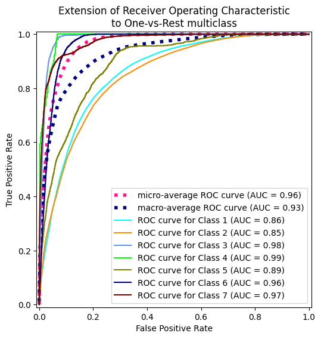
# 1. Definir pipeline con cuML (GPU)
pipeline = Pipeline([
('scaler', cuStandardScaler()), # Escalado en GPU
('model', None) # Modelo se definirá en el grid
])
# 2. Espacio de búsqueda de hiperparámetros
param_grid = {
# Regresión Logística L1 (GPU)
'model': [cuLogisticRegression(penalty='l1', solver ='qn')],
'model__C': np.logspace(-3, 3, 7), # 0.001 a 1000
'model__max_iter': [1000]
}
# 3. Configurar GridSearch
grid_search = GridSearchCV(
estimator=pipeline,
param_grid=param_grid,
scoring='roc_auc_ovr',
cv=5, # Reducir CV para mayor velocidad
n_jobs=1, # cuML no soporta n_jobs
verbose=2
)
# 4. Entrenamiento en GPU
print("Iniciando entrenamiento con GPU...")
grid_search.fit(X_train_SM_gpu, y_train_SM_gpu)
# Resultados
print(f"\nMejor modelo: {grid_search.best_params_}")
print(f"Accuracy: {grid_search.best_score_:.4f}")
Iniciando entrenamiento con GPU...
Fitting 5 folds for each of 7 candidates, totalling 35 fits
[CV] END model=LogisticRegression(), model__C=0.001, model__max_iter=1000; total time= 1.1min
[CV] END model=LogisticRegression(), model__C=0.001, model__max_iter=1000; total time= 1.1min
[CV] END model=LogisticRegression(), model__C=0.001, model__max_iter=1000; total time= 1.1min
[CV] END model=LogisticRegression(), model__C=0.001, model__max_iter=1000; total time= 1.7min
[CV] END model=LogisticRegression(), model__C=0.001, model__max_iter=1000; total time= 1.4min
[2025-05-11 21:14:28.404] [CUML] [warning] QWL-QN: max iterations reached
[2025-05-11 21:14:28.404] [CUML] [warning] Maximum iterations reached before solver is converged. To increase model accuracy you can increase the number of iterations (max_iter) or improve the scaling of the input data.
[CV] END model=LogisticRegression(), model__C=0.01, model__max_iter=1000; total time= 2.9min
[2025-05-11 21:16:59.246] [CUML] [warning] QWL-QN: max iterations reached
[2025-05-11 21:16:59.247] [CUML] [warning] Maximum iterations reached before solver is converged. To increase model accuracy you can increase the number of iterations (max_iter) or improve the scaling of the input data.
[CV] END model=LogisticRegression(), model__C=0.01, model__max_iter=1000; total time= 2.5min
[2025-05-11 21:19:31.402] [CUML] [warning] QWL-QN: max iterations reached
[2025-05-11 21:19:31.402] [CUML] [warning] Maximum iterations reached before solver is converged. To increase model accuracy you can increase the number of iterations (max_iter) or improve the scaling of the input data.
[CV] END model=LogisticRegression(), model__C=0.01, model__max_iter=1000; total time= 2.5min
[2025-05-11 21:22:04.963] [CUML] [warning] QWL-QN: max iterations reached
[2025-05-11 21:22:04.964] [CUML] [warning] Maximum iterations reached before solver is converged. To increase model accuracy you can increase the number of iterations (max_iter) or improve the scaling of the input data.
[CV] END model=LogisticRegression(), model__C=0.01, model__max_iter=1000; total time= 2.6min
[2025-05-11 21:24:43.483] [CUML] [warning] QWL-QN: max iterations reached
[2025-05-11 21:24:43.483] [CUML] [warning] Maximum iterations reached before solver is converged. To increase model accuracy you can increase the number of iterations (max_iter) or improve the scaling of the input data.
[CV] END model=LogisticRegression(), model__C=0.01, model__max_iter=1000; total time= 2.6min
[CV] END model=LogisticRegression(), model__C=0.1, model__max_iter=1000; total time= 2.1min
[CV] END model=LogisticRegression(), model__C=0.1, model__max_iter=1000; total time= 1.8min
[CV] END model=LogisticRegression(), model__C=0.1, model__max_iter=1000; total time= 1.8min
[CV] END model=LogisticRegression(), model__C=0.1, model__max_iter=1000; total time= 2.2min
[CV] END model=LogisticRegression(), model__C=0.1, model__max_iter=1000; total time= 1.5min
# Modelo con regularización L1
model_l1 = LogisticRegression(
penalty='l1', # Tipo de regularización (L1)
C=0.1, # Fuerza de regularización (inverso: C=0.1 es alta regularización)
solver='saga', # Algoritmo compatible con L1 (otros: 'liblinear')
max_iter=1000, # Aumentar si no converge
random_state=42,
verbose=2, # Ver progreso
n_jobs = -1,
multi_class= "ovr"
)
start = time.process_time()
model_l1.fit(X_train_sc, y_train)
end = time.process_time()
print(f"CPU Time: {end - start} segundos")
[Parallel(n_jobs=-1)]: Using backend ThreadingBackend with 2 concurrent workers.
convergence after 379 epochs took 566 seconds
convergence after 960 epochs took 1359 seconds
max_iter reached after 1498 seconds
max_iter reached after 1418 seconds
max_iter reached after 1489 seconds
---------------------------------------------------------------------------
KeyboardInterrupt Traceback (most recent call last)
<ipython-input-47-f79cc9e064ea> in <cell line: 0>()
11 )
12 start = time.process_time()
---> 13 model_l1.fit(X_train_sc, y_train)
14 end = time.process_time()
15 print(f"CPU Time: {end - start} segundos")
/usr/local/lib/python3.11/dist-packages/sklearn/base.py in wrapper(estimator, *args, **kwargs)
1387 )
1388 ):
-> 1389 return fit_method(estimator, *args, **kwargs)
1390
1391 return wrapper
/usr/local/lib/python3.11/dist-packages/sklearn/linear_model/_logistic.py in fit(self, X, y, sample_weight)
1348 n_threads = 1
1349
-> 1350 fold_coefs_ = Parallel(n_jobs=self.n_jobs, verbose=self.verbose, prefer=prefer)(
1351 path_func(
1352 X,
/usr/local/lib/python3.11/dist-packages/sklearn/utils/parallel.py in __call__(self, iterable)
75 for delayed_func, args, kwargs in iterable
76 )
---> 77 return super().__call__(iterable_with_config)
78
79
/usr/local/lib/python3.11/dist-packages/joblib/parallel.py in __call__(self, iterable)
2005 next(output)
2006
-> 2007 return output if self.return_generator else list(output)
2008
2009 def __repr__(self):
/usr/local/lib/python3.11/dist-packages/joblib/parallel.py in _get_outputs(self, iterator, pre_dispatch)
1648
1649 with self._backend.retrieval_context():
-> 1650 yield from self._retrieve()
1651
1652 except GeneratorExit:
/usr/local/lib/python3.11/dist-packages/joblib/parallel.py in _retrieve(self)
1760 (self._jobs[0].get_status(
1761 timeout=self.timeout) == TASK_PENDING)):
-> 1762 time.sleep(0.01)
1763 continue
1764
KeyboardInterrupt:
# Modelo con regularización L2 (configuración por defecto)
model_l2 = LogisticRegression(
penalty='l2', # Regularización L2 (configuración por defecto)
C=1000, # Valor por defecto
solver='lbfgs', # Algoritmo para L2 ('lbfgs', 'newton-cg', 'sag')
max_iter=1000,
n_jobs = -1,
multi_class="ovr",
verbose = 1
)
start = time.process_time()
model_l2.fit(X_train_sc, y_train)
end = time.process_time()
print(f"CPU Time: {end - start} segundos")
[Parallel(n_jobs=-1)]: Using backend LokyBackend with 2 concurrent workers.
CPU Time: 0.47875998399999986 segundos
[Parallel(n_jobs=-1)]: Done 7 out of 7 | elapsed: 22.4s finished
metricas(model_l2, StandardScaler())
LAUC_curvas(model_l2, StandardScaler())
Precisión: 71.56%
Matriz de confusión:
[[29380 12328 35 0 2 0 812]
[ 9935 45057 1267 2 62 110 67]
[ 0 740 6146 70 0 165 0]
[ 0 0 328 154 0 44 0]
[ 44 1717 206 0 26 2 0]
[ 0 1252 1959 30 4 244 0]
[ 1817 31 17 0 0 0 2150]]
Reporte de clasificación:
precision recall f1-score support
1 0.71 0.69 0.70 42557
2 0.74 0.80 0.77 56500
3 0.62 0.86 0.72 7121
4 0.60 0.29 0.39 526
5 0.28 0.01 0.02 1995
6 0.43 0.07 0.12 3489
7 0.71 0.54 0.61 4015
accuracy 0.72 116203
macro avg 0.58 0.47 0.48 116203
weighted avg 0.70 0.72 0.70 116203
Micro-averaged One-vs-Rest ROC AUC score:
0.96
Macro-averaged One-vs-Rest ROC AUC score:
0.93
print("Coeficientes L1:", model_l1.coef_)
print("Coeficientes L2:", model_l2.coef_)
# Contar coeficientes no nulos (L1 tiende a eliminar características)
print("Características no nulas (L1):", np.sum(model_l1.coef_ != 0))
print("Características no nulas (L2):", np.sum(model_l2.coef_ != 0))
Coeficientes L1: [[ 1.96701280e+00 -4.07914441e-02 -1.13931589e-01 -2.98984166e-01
-9.31559168e-02 -1.48958937e-01 -5.11565740e-01 2.91434613e-01
-1.27601363e-02 3.34722564e-01 0.00000000e+00 -4.13525245e-01
-2.75137476e-01 -7.88759246e-02 0.00000000e+00 -1.23808043e-01
-6.31543326e-02 2.63492003e-03 5.36810259e-02 3.96220935e-02
3.18117835e-03 -1.33344736e-01 -1.46437781e-02 -4.60995447e-02
0.00000000e+00 3.50128268e-02 3.05329157e-02 -8.71496838e-03
5.59115587e-02 1.12488749e-01 1.30363900e-01 2.70391511e-01
2.50633098e-01 1.15389339e-01 -2.26345386e-02 -6.41514896e-03
3.97429342e-02 -1.87691467e-02 -6.17643697e-02 -6.74538516e-02
1.15054864e-01 2.48709939e-02 1.36214659e-01 -8.13320058e-02
-9.09263403e-02 -2.99139034e-02 -2.17180650e-01 -1.57957083e-01
-1.52532094e-01 -1.88770425e-01 -8.10714479e-02 1.83186707e-02
-7.11673899e-01]
[-1.54724016e+00 -3.59526531e-02 1.15343013e-01 3.26397032e-01
2.80059954e-02 1.29458889e-01 4.99833458e-01 -1.15350452e-01
1.86040940e-02 2.20010314e-01 -4.86641987e-01 -4.45429336e-01
-2.29116891e-01 -4.20191148e-01 -3.43872439e-01 -3.09571173e-02
7.05732629e-02 8.75822347e-03 -8.12048714e-04 -1.47251485e-01
1.45786468e-02 3.09053329e-01 1.21666380e-01 -2.80301679e-01
-8.06429109e-03 -1.12028681e-02 -1.54801581e-01 -9.84979256e-03
-6.76079171e-03 -1.90764571e-02 -1.00788144e-01 -1.08588077e-01
-3.44906061e-02 8.99177904e-02 4.73615833e-02 7.66910954e-02
7.65344773e-03 7.33252155e-02 2.53171767e-01 1.23354650e-01
1.21495089e-01 2.63266065e-01 1.75622888e-01 1.05413723e-01
-1.65656912e-01 5.27527148e-03 -9.46063701e-02 -2.29322953e-01
-2.93648734e-01 -1.68400245e-01 2.07369333e-01 1.37935232e-01
-1.04420542e+00]
[-1.55438168e+00 1.68489500e-01 2.34794817e-01 4.09389262e-01
1.14374855e-01 -1.48305116e-01 2.37437787e-01 -2.18296789e-01
-3.69125213e-01 -3.79451523e-01 2.13160677e-01 5.34955945e-01
2.83641412e-01 6.95174803e-01 1.31488149e-01 4.28237901e-01
0.00000000e+00 0.00000000e+00 -7.36448885e-02 7.16626245e-01
4.25890485e-01 -1.99373286e-01 -9.19153042e-02 5.01691085e-02
-4.27108358e-03 1.74560318e-01 1.87427712e-01 -6.86179368e-02
0.00000000e+00 -1.09675234e-01 0.00000000e+00 -1.89769114e-02
-1.52701668e-01 -2.23728559e-01 0.00000000e+00 -9.37682441e-02
-2.42887496e-02 -1.10736161e-01 -1.54877326e-01 -2.12814385e-01
-2.89533590e-01 1.61904935e-01 -4.63473356e-01 -9.58235781e-02
0.00000000e+00 0.00000000e+00 0.00000000e+00 3.36684424e-02
0.00000000e+00 2.13748984e-02 1.57990917e-03 2.78154586e-01
5.17569171e-02]
[-8.16215596e-01 -1.00775385e-01 -3.39155738e-01 -6.27589559e-01
1.89364268e-01 6.70366956e-01 6.69694397e-01 -7.72991104e-01
3.08756182e-01 -3.75460425e-01 -7.11579767e-02 -1.19798567e-01
9.58081562e-02 -1.63931794e-02 -5.46567351e-02 -8.19621091e-02
0.00000000e+00 0.00000000e+00 0.00000000e+00 -2.60736835e-01
-5.57186081e-02 -9.65411104e-02 1.20665194e-02 4.24833283e-02
-6.33062050e-03 3.31244901e-02 1.39916452e-01 -2.33713872e-02
-9.74563141e-03 -6.20293097e-02 0.00000000e+00 1.15821011e-02
0.00000000e+00 6.89818397e-02 0.00000000e+00 0.00000000e+00
0.00000000e+00 0.00000000e+00 -2.81630811e-02 -5.37698513e-02
7.21270758e-02 1.06318386e-01 1.22656752e-01 0.00000000e+00
0.00000000e+00 0.00000000e+00 0.00000000e+00 3.85984564e-02
9.06158082e-02 9.21796831e-02 5.58102160e-02 -1.45740093e-01
1.21350622e+00]
[-8.79046609e-01 2.47204015e-01 -2.54107203e-02 -1.89146389e-01
3.20915856e-01 -7.30980726e-01 2.41807825e-01 -5.70406668e-01
-1.58645441e-01 2.14910244e-01 -1.23380835e-01 -1.85391407e-03
-3.95753013e-01 7.75134393e-03 -5.14566053e-02 -9.25960187e-02
0.00000000e+00 0.00000000e+00 -1.67660239e-01 -1.31328999e-01
1.31065085e-01 -6.62819446e-01 2.71670169e-01 -1.25347540e-01
0.00000000e+00 4.95546374e-03 1.90090724e-01 1.00271577e-01
1.73397564e-01 -4.01020443e-02 -8.12684121e-02 -5.28898182e-01
3.12128338e-01 -9.34415542e-02 0.00000000e+00 1.27160540e-01
-1.06017962e-01 -7.53621289e-03 3.64547373e-01 4.88313248e-01
9.46830884e-02 9.75938014e-02 2.37670096e-02 1.68378993e-03
-6.68529157e-02 -1.78852064e-03 0.00000000e+00 -1.95891609e-01
-2.78091420e-01 -1.48252636e-01 -4.97364443e-01 4.92250870e-01
-1.17262478e+00]
[-1.12102137e+00 1.33782578e-02 -6.08448564e-01 -3.41077817e-01
-3.92699660e-02 4.27565131e-02 -5.93672918e-01 4.51739411e-01
3.06274822e-01 -1.09046819e+00 1.69807177e-01 2.36923114e-01
8.51327856e-02 1.95289411e-01 1.33721456e-01 2.57656193e-01
0.00000000e+00 0.00000000e+00 -2.12374245e-02 5.80009254e-01
9.74419719e-02 -1.64259422e-01 3.27525679e-01 8.55702827e-02
1.36632416e-02 1.76292557e-01 1.29262518e-01 -7.80647268e-02
-1.19442086e-01 1.84072007e-01 -8.48515697e-02 -3.27644188e-01
-3.73723274e-01 2.28512532e-02 0.00000000e+00 -1.84365776e-01
-1.25048393e-02 -1.02333945e-01 -5.73712247e-02 0.00000000e+00
-2.19028385e-01 -3.80399221e-02 2.09580277e-01 5.47416838e-02
-2.49136434e-02 0.00000000e+00 0.00000000e+00 -6.05316234e-02
-8.01448401e-02 0.00000000e+00 -2.08905487e-04 9.51868013e-01
2.69761809e-01]
[ 4.09728251e+00 5.78622374e-02 -2.30168356e-01 -4.43616281e-01
-6.93730593e-02 -2.05755107e-01 2.54705380e-03 -4.43006378e-01
4.68553922e-01 -7.85990773e-01 1.16835625e-01 8.14412753e-02
9.23605386e-02 6.00354624e-01 5.85391534e-02 1.27744054e-01
0.00000000e+00 0.00000000e+00 5.35045996e-02 1.12572296e-01
-3.46298607e-03 5.02779988e-02 -3.58421062e-01 2.92812283e-03
0.00000000e+00 -2.31744322e-02 0.00000000e+00 0.00000000e+00
-1.17876644e-01 -1.41563425e-01 -5.49144099e-02 -3.59385622e-01
-1.88605513e-01 -1.83299901e-01 -1.02892076e-01 -1.20812098e-01
-2.46402132e-02 0.00000000e+00 4.86059950e-01 3.53026771e-01
-3.21842730e-01 -4.51155117e-01 -3.27952367e-01 2.71431814e-02
8.87683272e-02 2.41877160e-02 2.20847790e-01 2.98632200e-01
3.24525532e-01 1.45773642e-01 -3.27111458e-01 5.85115426e-01
7.00518686e-01]]
Coeficientes L2: [[ 1.96739491e+00 -4.11209118e-02 -1.13978432e-01 -2.99113635e-01
-9.32146155e-02 -1.49380879e-01 -5.12090178e-01 2.92280623e-01
-1.29283801e-02 5.06755369e-01 -1.16056221e-01 -7.41584963e-01
-5.17286322e-01 -6.56247648e-02 -9.73663516e-02 -3.24446275e-01
-1.21451010e-01 4.56486859e-03 5.83792895e-02 6.61743360e-02
1.85193554e-02 -1.10988519e-01 2.73666161e-03 -1.22618152e-01
-2.77142636e-03 4.23172455e-02 3.88631217e-02 -3.53674605e-03
6.44677628e-02 1.25435291e-01 1.34782870e-01 2.94427096e-01
2.81438181e-01 1.34753507e-01 -1.97677425e-02 2.24499694e-04
4.43098415e-02 -1.51161188e-02 -2.12192350e-02 -4.49573975e-02
1.36368728e-01 5.46171343e-02 1.64034957e-01 -7.63187563e-02
-8.51368496e-02 -2.86024460e-02 -3.64990614e-01 -1.41493255e-01
-1.36995001e-01 -1.76436513e-01 -5.20582141e-03 1.88777347e-01
-1.40990659e+00]
[-1.54915368e+00 -3.61423168e-02 1.15925314e-01 3.26705698e-01
2.81009193e-02 1.29838977e-01 5.00892305e-01 -1.15857338e-01
1.85736925e-02 2.45967934e-01 -7.59168799e-01 -4.41550992e-01
-2.26056722e-01 -4.15112422e-01 -5.40166292e-01 -2.73310216e-02
1.15096057e-01 9.56729659e-03 6.73208215e-04 -1.38784105e-01
2.02071381e-02 3.17890205e-01 1.28305023e-01 -4.19170215e-01
-2.02333084e-02 -8.62526031e-03 -1.52064201e-01 -7.90656482e-03
-3.55429469e-03 -1.42575433e-02 -1.00037095e-01 -9.93363953e-02
-2.26001949e-02 9.75317723e-02 4.85808938e-02 7.94233348e-02
9.43044214e-03 7.52060492e-02 2.69147886e-01 1.32178028e-01
1.29815959e-01 2.74877759e-01 1.86295820e-01 1.07703105e-01
-1.66078579e-01 5.94879480e-03 -1.42447548e-01 -2.23132661e-01
-2.88231184e-01 -1.64023796e-01 2.19335997e-01 1.63934750e-01
-1.03155958e+00]
[-1.56171990e+00 1.72911431e-01 2.39089780e-01 4.14681241e-01
1.15472258e-01 -1.70527811e-01 2.43324553e-01 -2.25028182e-01
-3.77605100e-01 -1.18743708e+00 3.49952685e-01 7.50177235e-01
4.55926133e-01 9.69951031e-01 2.31307454e-01 6.30731598e-01
-2.48562730e-03 -2.89863589e-03 -8.39416568e-02 1.15682479e+00
7.01306938e-01 -2.30525703e-01 2.18675133e-01 1.11449283e-01
-1.14335872e-02 3.19553261e-01 3.33686773e-01 -8.61612500e-02
-1.65370424e-01 1.04704132e-02 -1.00794116e-01 -4.21108980e-01
-6.95432201e-01 -5.59775053e-01 -1.95536454e-02 -2.16409781e-01
-1.27228364e-01 -1.69897118e-01 -2.88533259e-01 -2.43017272e-01
-6.41816055e-01 7.12808250e-01 -3.50487940e-01 -1.84764038e-01
-7.88500118e-02 -3.79861688e-02 -2.26898158e-02 -2.70454227e-01
-2.93771860e-01 -1.50654897e-01 -3.17704207e-01 1.10852070e+00
4.55045142e-01]
[-1.85911241e+00 -1.44956028e-01 -4.67264418e-01 -1.18447232e+00
5.95212333e-01 2.58337341e+00 9.55205212e-01 -1.08262221e+00
1.96601853e+00 -1.41595100e+00 8.51973043e-02 1.03548768e-01
2.65891609e-01 3.08046510e-01 6.66648810e-02 1.60232007e-01
-9.07067408e-03 -2.03088876e-02 6.49930827e-05 3.19617756e-01
3.38463123e-01 -1.89107889e-01 -2.62905308e-02 1.12262739e-01
-1.29571829e-02 2.01613321e-01 2.96285537e-01 -7.03418045e-03
-4.48749691e-02 -1.20975817e-01 -5.02154695e-03 -3.13319481e-02
-5.08288476e-02 -6.52010670e-02 -3.00010596e-03 -1.16771642e-02
-7.55487073e-03 -7.58291956e-03 -2.24395815e-01 -1.57224853e-01
-3.14234657e-02 -4.47614412e-02 -4.73200301e-02 -7.75988042e-03
-8.37315240e-03 -2.74380145e-03 -2.81178848e-03 -2.24607567e-02
-2.45814052e-02 -2.06854110e-02 -2.27625345e-02 -1.44754108e-01
3.19664679e+00]
[-8.83607108e-01 2.56893695e-01 -2.88442147e-02 -1.95503298e-01
3.27410338e-01 -7.41717326e-01 2.47698237e-01 -5.80499557e-01
-1.62844197e-01 5.49621735e-01 -2.23241723e-01 8.12981541e-02
-6.47104640e-01 1.14923184e-01 -1.38076643e-01 -2.22640478e-01
-4.86284753e-02 -6.93224025e-02 -3.05063408e-01 4.04388071e-02
2.39619395e-01 -1.24056208e+00 3.99026570e-01 -2.35942016e-01
-5.41764533e-03 5.63513838e-02 2.47952637e-01 1.40394463e-01
2.36506720e-01 4.59954622e-02 -2.04480746e-01 -1.13648981e+00
5.32543378e-01 4.03383926e-02 -5.51599891e-02 1.78024267e-01
-2.41036677e-01 2.13471841e-02 6.40571913e-01 6.40540659e-01
2.50674226e-01 3.15119716e-01 2.26334726e-01 4.28781118e-02
-2.46293547e-01 -6.34548554e-02 -8.30425797e-02 -6.47526176e-01
-6.92972334e-01 -4.94596508e-01 -1.08159401e+00 7.95554837e-01
-1.75558156e+00]
[-1.13232924e+00 1.54063923e-02 -6.22577397e-01 -3.55204060e-01
-3.53001653e-02 5.69409942e-02 -6.09767017e-01 4.62091093e-01
3.73086819e-01 -2.07086173e+00 2.42792277e-01 3.50300541e-01
1.77703903e-01 3.40077524e-01 1.86602396e-01 3.63210541e-01
-1.14656293e-02 -1.67283590e-02 -4.01383733e-02 8.08089797e-01
2.37319204e-01 -2.03939924e-01 4.97083048e-01 1.17732893e-01
5.23064358e-02 2.58453899e-01 2.02877510e-01 -7.17564568e-02
-3.42312129e-01 3.11281489e-01 -2.09055325e-01 -9.10138160e-01
-1.72279180e-01 2.05433805e-01 -2.03467339e-02 -3.93941182e-01
-1.48540632e-01 -2.32494566e-01 -3.55855953e-01 -1.64531874e-01
-4.09418525e-02 2.29912352e-01 4.72029557e-01 1.08787589e-01
-1.92284974e-01 -3.82351642e-02 -5.15343195e-02 -4.98255539e-01
-4.93476279e-01 -3.21856891e-01 -4.87485563e-01 1.92442012e+00
7.51296744e-01]
[ 4.34797138e+00 6.32338162e-02 -2.43586845e-01 -4.58229664e-01
-8.31076548e-02 -2.22901100e-01 -1.90232952e-03 -4.56459455e-01
4.83244007e-01 -6.48621170e-01 5.67547744e-02 -1.10201852e-01
-3.56616478e-02 7.57507484e-01 2.94023243e-02 7.44047762e-03
-3.26007613e-02 -4.87395618e-02 2.25975530e-02 -4.57824680e-01
-3.98454471e-01 -5.35978816e-01 -3.58058883e-01 2.37247696e-02
2.47760173e-03 -2.46895632e-01 -2.23519056e-01 -1.60828164e-01
-9.40235514e-02 -5.15603268e-01 -3.21569975e-02 -2.10090501e-01
1.11684448e-02 -5.57998972e-02 -2.17496501e-01 -3.22502952e-01
5.53920221e-03 -8.12416143e-02 7.89498497e-01 5.26739984e-01
-1.88561840e-01 -2.76359954e-01 -1.57154800e-01 6.48993372e-02
1.23882519e-01 3.35654362e-02 3.17482630e-01 4.01711270e-01
4.25554196e-01 2.17389978e-01 -2.74390827e-01 7.53431681e-01
3.95690939e-02]]
Características no nulas (L1): 328
Características no nulas (L2): 371
# Coeficientes L1 vs L2
plt.figure(figsize=(10, 6))
plt.plot(model_l1.coef_.flatten(), 'o', label='L1 (Lasso)')
plt.plot(model_l2.coef_.flatten(), 'o', label='L2 (Ridge)')
plt.axhline(0, color='black', linestyle='--')
plt.xlabel("Índice de la Característica")
plt.ylabel("Valor del Coeficiente")
plt.legend()
plt.title("Efecto de L1 vs L2 en los Coeficientes")
plt.show()

Bayesiano#
from sklearn.naive_bayes import MultinomialNB, BernoulliNB, GaussianNB
from sklearn.preprocessing import MinMaxScaler
pipeline = Pipeline([
('scaler', None), # Placeholder para el escalador (se definirá en el grid)
('clf', None) # Placeholder para el clasificador
])
param_gridG = [
# Opción 1: GaussianNB (para características continuas)
{
'scaler': [StandardScaler(), MinMaxScaler(), None],
'clf': [GaussianNB()],
'clf__var_smoothing': np.logspace(0, -9, num=10)
}
]
# Opción 2: MultinomialNB (para conteos/frecuencias)
param_gridM = [
{
'scaler': [MinMaxScaler()], # Necesario para valores negativos
'clf': [MultinomialNB()],
'clf__alpha': [0.1, 0.5, 1.0, 2.0],
'clf__fit_prior': [True, False]
}
]
param_gridB = [
# Opción 3: BernoulliNB (para características binarias)
{
'scaler': [None], # No necesita escalado
'clf': [BernoulliNB()],
'clf__alpha': [0.1, 0.5, 1.0, 2.0],
'clf__fit_prior': [True, False],
'clf__binarize': [None, 0.0, 0.5]
}
]
grid_searchG = GridSearchCV(
estimator=pipeline,
param_grid=param_gridG,
cv=StratifiedKFold(5),
scoring='roc_auc_ovr',
verbose=1,
refit=True # Reentrena el mejor modelo encontrado
)
grid_searchM = GridSearchCV(
estimator=pipeline,
param_grid=param_gridM,
cv=StratifiedKFold(5),
scoring='roc_auc_ovr',
verbose=1,
refit=True # Reentrena el mejor modelo encontrado
)
grid_searchB = GridSearchCV(
estimator=pipeline,
param_grid=param_gridB,
cv=StratifiedKFold(5),
scoring='roc_auc_ovr',
verbose=1,
refit=True # Reentrena el mejor modelo encontrado
)
start = time.process_time() # Inicia el contador de CPU time
grid_searchG.fit(X_train, y_train)
end = time.process_time() # Finaliza el contador de CPU time
print(f"CPU Time: {end - start} segundos")
print("Mejores hiperparámetros:", grid_searchG.best_params_)
best_model = grid_searchG.best_estimator_
metricas(best_model)
LAUC_curvas(best_model)
Fitting 5 folds for each of 30 candidates, totalling 150 fits
CPU Time: 114.66441488300006 segundos
Mejores hiperparámetros: {'clf': GaussianNB(), 'clf__var_smoothing': 1e-07, 'scaler': None}
Precisión: 65.21%
Matriz de confusión:
[[28485 10486 67 0 424 88 3007]
[12941 38200 1543 3 1709 1176 928]
[ 0 949 4865 374 22 911 0]
[ 0 0 157 314 0 55 0]
[ 19 1384 39 0 487 66 0]
[ 0 529 1508 78 30 1344 0]
[ 1909 17 8 0 3 0 2078]]
Reporte de clasificación:
precision recall f1-score support
1 0.66 0.67 0.66 42557
2 0.74 0.68 0.71 56500
3 0.59 0.68 0.64 7121
4 0.41 0.60 0.48 526
5 0.18 0.24 0.21 1995
6 0.37 0.39 0.38 3489
7 0.35 0.52 0.41 4015
accuracy 0.65 116203
macro avg 0.47 0.54 0.50 116203
weighted avg 0.67 0.65 0.66 116203
Micro-averaged One-vs-Rest ROC AUC score:
0.94
Macro-averaged One-vs-Rest ROC AUC score:
0.91
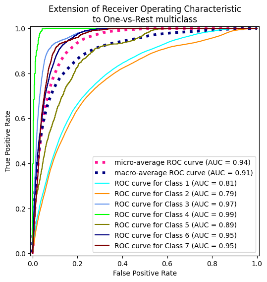
start = time.process_time() # Inicia el contador de CPU time
grid_searchG.fit(X_train_SM, y_train_SM)
end = time.process_time() # Finaliza el contador de CPU time
print(f"CPU Time: {end - start} segundos")
print("Mejores hiperparámetros:", grid_searchG.best_params_)
best_model = grid_searchG.best_estimator_
metricas(best_model)
LAUC_curvas(best_model)
Fitting 5 folds for each of 30 candidates, totalling 150 fits
CPU Time: 365.49020038699985 segundos
Mejores hiperparámetros: {'clf': GaussianNB(), 'clf__var_smoothing': 1e-08, 'scaler': None}
Precisión: 49.95%
Matriz de confusión:
[[30037 3986 43 0 2839 176 5476]
[22184 16938 1709 86 12674 1812 1097]
[ 0 28 4245 1373 297 1178 0]
[ 0 0 62 420 0 44 0]
[ 161 181 197 0 1388 68 0]
[ 34 63 1033 401 272 1686 0]
[ 625 18 14 0 28 0 3330]]
Reporte de clasificación:
precision recall f1-score support
1 0.57 0.71 0.63 42557
2 0.80 0.30 0.44 56500
3 0.58 0.60 0.59 7121
4 0.18 0.80 0.30 526
5 0.08 0.70 0.14 1995
6 0.34 0.48 0.40 3489
7 0.34 0.83 0.48 4015
accuracy 0.50 116203
macro avg 0.41 0.63 0.42 116203
weighted avg 0.66 0.50 0.51 116203
Micro-averaged One-vs-Rest ROC AUC score:
0.88
Macro-averaged One-vs-Rest ROC AUC score:
0.89
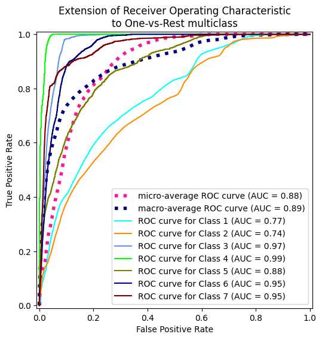
start = time.process_time() # Inicia el contador de CPU time
grid_searchG.fit(X_train_ADA, y_train_ADA)
end = time.process_time() # Finaliza el contador de CPU time
print(f"CPU Time: {end - start} segundos")
print("Mejores hiperparámetros:", grid_searchG.best_params_)
best_model = grid_searchG.best_estimator_
metricas(best_model)
LAUC_curvas(best_model)
Fitting 5 folds for each of 30 candidates, totalling 150 fits
CPU Time: 357.4205450500001 segundos
Mejores hiperparámetros: {'clf': GaussianNB(), 'clf__var_smoothing': 1e-08, 'scaler': None}
Precisión: 46.99%
Matriz de confusión:
[[27887 3464 138 0 2485 325 8258]
[22216 15745 2852 253 11843 934 2657]
[ 0 4 5054 1716 158 189 0]
[ 0 0 172 354 0 0 0]
[ 189 143 249 0 1350 64 0]
[ 28 9 1615 790 337 710 0]
[ 463 27 17 0 2 0 3506]]
Reporte de clasificación:
precision recall f1-score support
1 0.55 0.66 0.60 42557
2 0.81 0.28 0.41 56500
3 0.50 0.71 0.59 7121
4 0.11 0.67 0.19 526
5 0.08 0.68 0.15 1995
6 0.32 0.20 0.25 3489
7 0.24 0.87 0.38 4015
accuracy 0.47 116203
macro avg 0.37 0.58 0.37 116203
weighted avg 0.65 0.47 0.48 116203
Micro-averaged One-vs-Rest ROC AUC score:
0.87
Macro-averaged One-vs-Rest ROC AUC score:
0.89
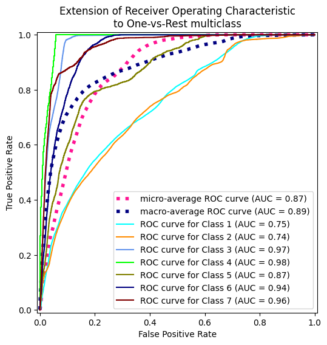
start = time.process_time() # Inicia el contador de CPU time
grid_searchM.fit(X_train, y_train)
end = time.process_time() # Finaliza el contador de CPU time
print(f"CPU Time: {end - start} segundos")
print("Mejores hiperparámetros:", grid_searchM.best_params_)
best_model = grid_searchM.best_estimator_
metricas(best_model)
LAUC_curvas(best_model)
Fitting 5 folds for each of 8 candidates, totalling 40 fits
CPU Time: 55.94424782299984 segundos
Mejores hiperparámetros: {'clf': MultinomialNB(), 'clf__alpha': 0.1, 'clf__fit_prior': True, 'scaler': MinMaxScaler()}
Precisión: 64.06%
Matriz de confusión:
[[19791 21730 60 0 0 0 976]
[ 8638 45623 2101 0 31 9 98]
[ 0 437 6585 57 0 42 0]
[ 0 0 404 79 0 43 0]
[ 179 1587 229 0 0 0 0]
[ 34 837 2487 9 6 116 0]
[ 1226 531 17 0 0 0 2241]]
Reporte de clasificación:
precision recall f1-score support
1 0.66 0.47 0.55 42557
2 0.64 0.81 0.72 56500
3 0.55 0.92 0.69 7121
4 0.54 0.15 0.24 526
5 0.00 0.00 0.00 1995
6 0.55 0.03 0.06 3489
7 0.68 0.56 0.61 4015
accuracy 0.64 116203
macro avg 0.52 0.42 0.41 116203
weighted avg 0.63 0.64 0.62 116203
Micro-averaged One-vs-Rest ROC AUC score:
0.94
Macro-averaged One-vs-Rest ROC AUC score:
0.89
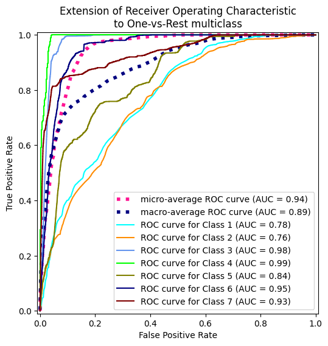
start = time.process_time() # Inicia el contador de CPU time
grid_searchM.fit(X_train_SM, y_train_SM)
end = time.process_time() # Finaliza el contador de CPU time
print(f"CPU Time: {end - start} segundos")
print("Mejores hiperparámetros:", grid_searchM.best_params_)
best_model = grid_searchM.best_estimator_
metricas(best_model)
LAUC_curvas(best_model)
Fitting 5 folds for each of 8 candidates, totalling 40 fits
CPU Time: 107.61551072099996 segundos
Mejores hiperparámetros: {'clf': MultinomialNB(), 'clf__alpha': 0.1, 'clf__fit_prior': True, 'scaler': MinMaxScaler()}
Precisión: 51.63%
Matriz de confusión:
[[18584 17024 35 0 2204 189 4521]
[11122 32082 1040 196 9552 2188 320]
[ 0 31 2717 1600 289 2484 0]
[ 0 0 61 405 0 60 0]
[ 244 452 206 0 1034 59 0]
[ 56 201 519 494 290 1929 0]
[ 267 443 17 0 43 0 3245]]
Reporte de clasificación:
precision recall f1-score support
1 0.61 0.44 0.51 42557
2 0.64 0.57 0.60 56500
3 0.59 0.38 0.46 7121
4 0.15 0.77 0.25 526
5 0.08 0.52 0.13 1995
6 0.28 0.55 0.37 3489
7 0.40 0.81 0.54 4015
accuracy 0.52 116203
macro avg 0.39 0.58 0.41 116203
weighted avg 0.60 0.52 0.54 116203
Micro-averaged One-vs-Rest ROC AUC score:
0.89
Macro-averaged One-vs-Rest ROC AUC score:
0.87
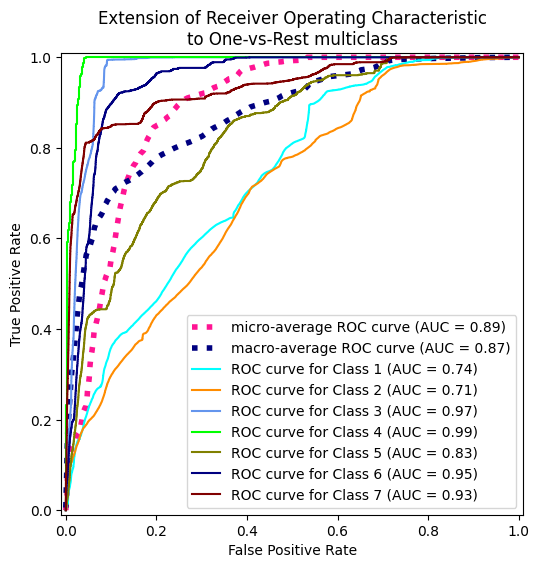
start = time.process_time() # Inicia el contador de CPU time
grid_searchM.fit(X_train_ADA, y_train_ADA)
end = time.process_time() # Finaliza el contador de CPU time
print(f"CPU Time: {end - start} segundos")
print("Mejores hiperparámetros:", grid_searchM.best_params_)
best_model = grid_searchM.best_estimator_
metricas(best_model)
LAUC_curvas(best_model)
Fitting 5 folds for each of 8 candidates, totalling 40 fits
CPU Time: 104.61894024599997 segundos
Mejores hiperparámetros: {'clf': MultinomialNB(), 'clf__alpha': 0.5, 'clf__fit_prior': True, 'scaler': MinMaxScaler()}
Precisión: 43.64%
Matriz de confusión:
[[16519 10324 35 0 7603 470 7606]
[ 9199 24137 1078 204 15980 2330 3572]
[ 0 25 3300 1877 263 1653 3]
[ 0 0 70 422 0 34 0]
[ 168 320 206 0 1203 80 18]
[ 34 44 715 636 347 1712 1]
[ 210 176 17 0 197 0 3415]]
Reporte de clasificación:
precision recall f1-score support
1 0.63 0.39 0.48 42557
2 0.69 0.43 0.53 56500
3 0.61 0.46 0.53 7121
4 0.13 0.80 0.23 526
5 0.05 0.60 0.09 1995
6 0.27 0.49 0.35 3489
7 0.23 0.85 0.37 4015
accuracy 0.44 116203
macro avg 0.37 0.58 0.37 116203
weighted avg 0.62 0.44 0.49 116203
Micro-averaged One-vs-Rest ROC AUC score:
0.87
Macro-averaged One-vs-Rest ROC AUC score:
0.86
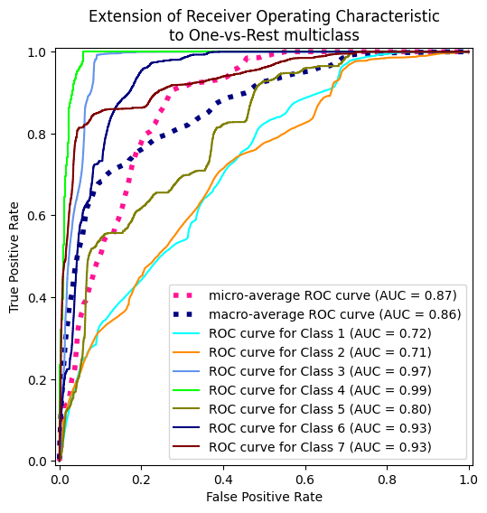
start = time.process_time() # Inicia el contador de CPU time
grid_searchB.fit(X_train, y_train)
end = time.process_time() # Finaliza el contador de CPU time
print(f"CPU Time: {end - start} segundos")
print("Mejores hiperparámetros:", grid_searchB.best_params_)
best_model = grid_searchB.best_estimator_
metricas(best_model)
LAUC_curvas(best_model)
Fitting 5 folds for each of 24 candidates, totalling 120 fits
CPU Time: 190.485266573 segundos
Mejores hiperparámetros: {'clf': BernoulliNB(), 'clf__alpha': 0.1, 'clf__binarize': 0.0, 'clf__fit_prior': True, 'scaler': None}
Precisión: 63.04%
Matriz de confusión:
[[20357 20717 35 0 41 188 1219]
[ 9594 43073 1554 11 218 1829 221]
[ 0 287 6216 129 48 441 0]
[ 0 0 273 224 0 29 0]
[ 207 1409 202 0 114 63 0]
[ 70 384 2057 53 121 804 0]
[ 1018 509 17 0 0 0 2471]]
Reporte de clasificación:
precision recall f1-score support
1 0.65 0.48 0.55 42557
2 0.65 0.76 0.70 56500
3 0.60 0.87 0.71 7121
4 0.54 0.43 0.48 526
5 0.21 0.06 0.09 1995
6 0.24 0.23 0.23 3489
7 0.63 0.62 0.62 4015
accuracy 0.63 116203
macro avg 0.50 0.49 0.48 116203
weighted avg 0.63 0.63 0.62 116203
Micro-averaged One-vs-Rest ROC AUC score:
0.94
Macro-averaged One-vs-Rest ROC AUC score:
0.88
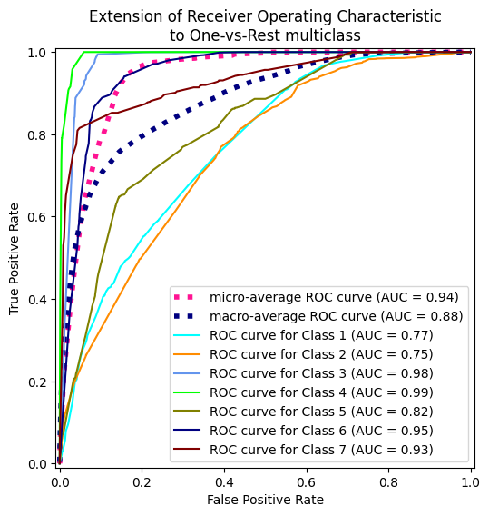
start = time.process_time() # Inicia el contador de CPU time
grid_searchB.fit(X_train_SM, y_train_SM)
end = time.process_time() # Finaliza el contador de CPU time
print(f"CPU Time: {end - start} segundos")
print("Mejores hiperparámetros:", grid_searchB.best_params_)
best_model = grid_searchB.best_estimator_
metricas(best_model)
LAUC_curvas(best_model)
Fitting 5 folds for each of 24 candidates, totalling 120 fits
CPU Time: 484.7864293700002 segundos
Mejores hiperparámetros: {'clf': BernoulliNB(), 'clf__alpha': 0.1, 'clf__binarize': 0.0, 'clf__fit_prior': False, 'scaler': None}
Precisión: 49.03%
Matriz de confusión:
[[17492 15830 32 0 4485 189 4529]
[10278 30024 1030 217 12160 2165 626]
[ 1 31 2819 1687 325 2258 0]
[ 0 0 25 477 0 24 0]
[ 217 411 200 0 1097 63 7]
[ 75 161 593 518 337 1804 1]
[ 241 396 17 0 104 0 3257]]
Reporte de clasificación:
precision recall f1-score support
1 0.62 0.41 0.49 42557
2 0.64 0.53 0.58 56500
3 0.60 0.40 0.48 7121
4 0.16 0.91 0.28 526
5 0.06 0.55 0.11 1995
6 0.28 0.52 0.36 3489
7 0.39 0.81 0.52 4015
accuracy 0.49 116203
macro avg 0.39 0.59 0.40 116203
weighted avg 0.60 0.49 0.52 116203
Micro-averaged One-vs-Rest ROC AUC score:
0.88
Macro-averaged One-vs-Rest ROC AUC score:
0.87
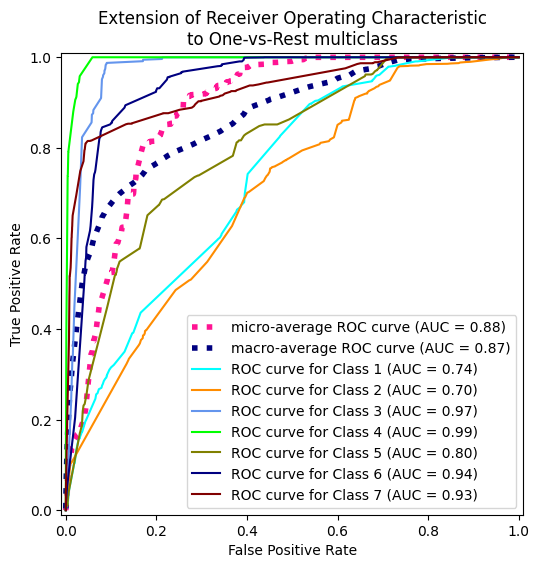
start = time.process_time() # Inicia el contador de CPU time
grid_searchB.fit(X_train_ADA, y_train_ADA)
end = time.process_time() # Finaliza el contador de CPU time
print(f"CPU Time: {end - start} segundos")
print("Mejores hiperparámetros:", grid_searchB.best_params_)
best_model = grid_searchB.best_estimator_
metricas(best_model)
LAUC_curvas(best_model)
Fitting 5 folds for each of 24 candidates, totalling 120 fits
CPU Time: 479.9803478519998 segundos
Mejores hiperparámetros: {'clf': BernoulliNB(), 'clf__alpha': 0.1, 'clf__binarize': 0.0, 'clf__fit_prior': False, 'scaler': None}
Precisión: 42.03%
Matriz de confusión:
[[14259 10248 32 0 7508 523 9987]
[ 7812 23644 1504 47 14487 2171 6835]
[ 0 1 5461 912 263 457 27]
[ 0 0 254 272 0 0 0]
[ 129 592 192 0 849 139 94]
[ 5 0 1745 406 340 922 71]
[ 167 206 17 0 195 0 3430]]
Reporte de clasificación:
precision recall f1-score support
1 0.64 0.34 0.44 42557
2 0.68 0.42 0.52 56500
3 0.59 0.77 0.67 7121
4 0.17 0.52 0.25 526
5 0.04 0.43 0.07 1995
6 0.22 0.26 0.24 3489
7 0.17 0.85 0.28 4015
accuracy 0.42 116203
macro avg 0.36 0.51 0.35 116203
weighted avg 0.61 0.42 0.47 116203
Micro-averaged One-vs-Rest ROC AUC score:
0.86
Macro-averaged One-vs-Rest ROC AUC score:
0.85
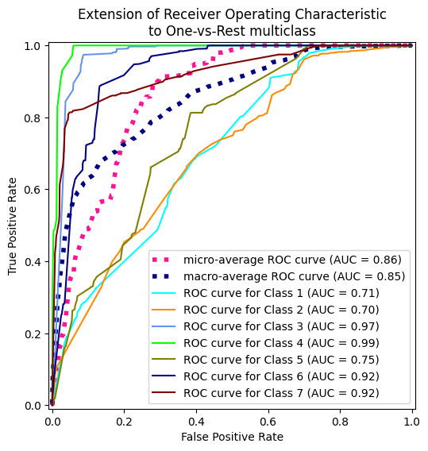
decision_scores = model.decision_function(X_test)
# Calcular FPR, TPR y AUC para cada clase
n_classes = len(model.classes_)
fpr = dict()
tpr = dict()
roc_auc = dict()
for i in range(n_classes):
fpr[i], tpr[i], _ = roc_curve(y_test == i, decision_scores[:, i])
roc_auc[i] = auc(fpr[i], tpr[i])
print(f'AUC para la clase {i}: {roc_auc[i]:.2f}')
# Graficar las curvas ROC
plt.figure(figsize=(8, 6))
colors = ['blue', 'red', 'green']
for i, color in zip(range(n_classes), colors):
plt.plot(fpr[i], tpr[i], color=color, lw=2, label=f'Clase {i} (AUC = {roc_auc[i]:.2f})')
plt.plot([0, 1], [0, 1], color='black', linestyle='--', lw=2)
plt.xlabel('Tasa de falsos positivos (FPR)')
plt.ylabel('Tasa de verdaderos positivos (TPR)')
plt.title('Curva ROC multiclase (One-vs-Rest) usando decision_function')
plt.legend(loc='lower right')
plt.show()
Arbol de decision#
from sklearn.tree import DecisionTreeClassifier
pipeline = Pipeline([
('scaler', None),
('model', DecisionTreeClassifier(random_state = 42))
])
param_grid = {
"model__max_depth": [10, 20, 30, None],
"model__criterion": ["gini", "entropy"],
"model__max_features": ["sqrt", "log2", None],
}
# Configurar Grid Search
grid_search = GridSearchCV(
estimator=pipeline,
param_grid=param_grid,
scoring="roc_auc_ovr", # Métrica de evaluación
cv=StratifiedKFold(5), # Validación cruzada de 5 folds
n_jobs=-1, # Usar todos los núcleos de la CPU
verbose=1
)
start = time.process_time() # Inicia el contador de CPU time
# Ejecutar Grid Search
grid_search.fit(X_train, y_train)
end = time.process_time() # Finaliza el contador de CPU time
print(f"CPU Time: {end - start} segundos")
# Mejores hiperparámetros
print("Mejores hiperparámetros:", grid_search.best_params_)
# Evaluar el mejor modelo
best_model = grid_search.best_estimator_
metricas(best_model)
LAUC_curvas(best_model)
Fitting 5 folds for each of 24 candidates, totalling 120 fits
CPU Time: 8.313750504999916 segundos
Mejores hiperparámetros: {'model__criterion': 'gini', 'model__max_depth': 20, 'model__max_features': None}
Precisión: 90.56%
Matriz de confusión:
[[38017 4316 1 0 38 6 179]
[ 3198 52776 136 0 191 174 25]
[ 5 270 6300 45 11 489 1]
[ 0 1 77 421 0 27 0]
[ 47 713 18 0 1205 12 0]
[ 8 303 348 23 5 2802 0]
[ 278 26 0 0 0 0 3711]]
Reporte de clasificación:
precision recall f1-score support
1 0.91 0.89 0.90 42557
2 0.90 0.93 0.92 56500
3 0.92 0.88 0.90 7121
4 0.86 0.80 0.83 526
5 0.83 0.60 0.70 1995
6 0.80 0.80 0.80 3489
7 0.95 0.92 0.94 4015
accuracy 0.91 116203
macro avg 0.88 0.83 0.86 116203
weighted avg 0.91 0.91 0.90 116203
Micro-averaged One-vs-Rest ROC AUC score:
0.98
Macro-averaged One-vs-Rest ROC AUC score:
0.96
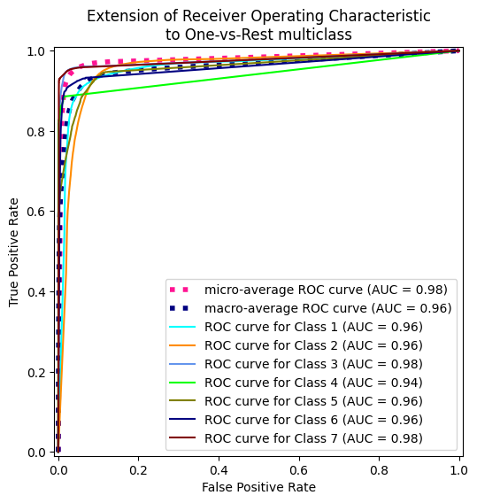
start = time.process_time() # Inicia el contador de CPU time
# Ejecutar Grid Search
grid_search.fit(X_train_SM, y_train_SM)
end = time.process_time() # Finaliza el contador de CPU time
print(f"CPU Time: {end - start} segundos")
# Mejores hiperparámetros
print("Mejores hiperparámetros:", grid_search.best_params_)
# Evaluar el mejor modelo
best_model_SM = grid_search.best_estimator_
metricas(best_model_SM)
LAUC_curvas(best_model_SM)
Fitting 5 folds for each of 24 candidates, totalling 120 fits
CPU Time: 25.864894435000224 segundos
Mejores hiperparámetros: {'model__criterion': 'entropy', 'model__max_depth': 20, 'model__max_features': None}
Precisión: 91.31%
Matriz de confusión:
[[39152 2750 7 0 138 17 493]
[ 3703 50962 246 1 1228 320 40]
[ 1 76 6620 56 21 347 0]
[ 0 1 52 456 0 17 0]
[ 18 125 17 0 1829 6 0]
[ 2 74 181 23 13 3196 0]
[ 109 17 0 0 1 0 3888]]
Reporte de clasificación:
precision recall f1-score support
1 0.91 0.92 0.92 42557
2 0.94 0.90 0.92 56500
3 0.93 0.93 0.93 7121
4 0.85 0.87 0.86 526
5 0.57 0.92 0.70 1995
6 0.82 0.92 0.86 3489
7 0.88 0.97 0.92 4015
accuracy 0.91 116203
macro avg 0.84 0.92 0.87 116203
weighted avg 0.92 0.91 0.91 116203
Micro-averaged One-vs-Rest ROC AUC score:
0.98
Macro-averaged One-vs-Rest ROC AUC score:
0.96
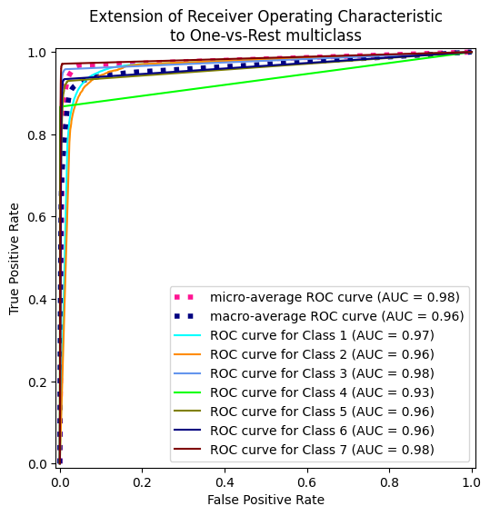
start = time.process_time() # Inicia el contador de CPU time
# Ejecutar Grid Search
grid_search.fit(X_train_ADA, y_train_ADA)
end = time.process_time() # Finaliza el contador de CPU time
print(f"CPU Time: {end - start} segundos")
# Mejores hiperparámetros
print("Mejores hiperparámetros:", grid_search.best_params_)
# Evaluar el mejor modelo
best_model_ADA = grid_search.best_estimator_
metricas(best_model_ADA)
LAUC_curvas(best_model_ADA)
Fitting 5 folds for each of 24 candidates, totalling 120 fits
CPU Time: 22.23951835700018 segundos
Mejores hiperparámetros: {'model__criterion': 'entropy', 'model__max_depth': 20, 'model__max_features': None}
Precisión: 88.85%
Matriz de confusión:
[[38655 2701 8 0 136 7 1050]
[ 5739 48955 264 1 1049 357 135]
[ 4 108 6446 54 38 471 0]
[ 0 0 77 434 0 15 0]
[ 23 128 16 0 1815 13 0]
[ 7 81 325 35 6 3035 0]
[ 90 19 0 0 0 0 3906]]
Reporte de clasificación:
precision recall f1-score support
1 0.87 0.91 0.89 42557
2 0.94 0.87 0.90 56500
3 0.90 0.91 0.90 7121
4 0.83 0.83 0.83 526
5 0.60 0.91 0.72 1995
6 0.78 0.87 0.82 3489
7 0.77 0.97 0.86 4015
accuracy 0.89 116203
macro avg 0.81 0.89 0.85 116203
weighted avg 0.90 0.89 0.89 116203
Micro-averaged One-vs-Rest ROC AUC score:
0.98
Macro-averaged One-vs-Rest ROC AUC score:
0.96
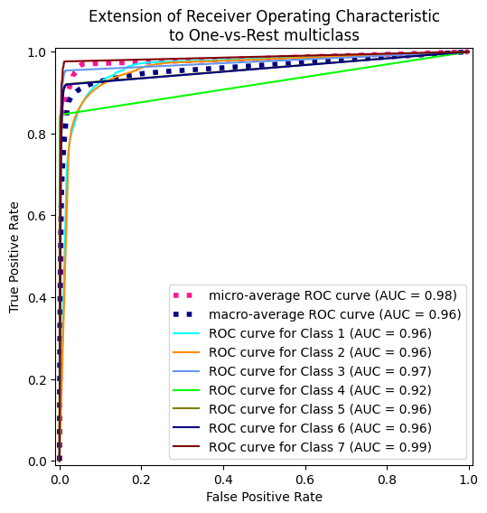
Ahora hagamos la validacion cruzada anidada usando class = ‘balanced’
pipeline_B= Pipeline([
('scaler', None),
('model', DecisionTreeClassifier(random_state = 42, class_weight="balanced"))
])
# Configurar Grid Search
grid_search = GridSearchCV(
estimator=pipeline_B,
param_grid=param_grid,
scoring="roc_auc_ovr", # Métrica de evaluación
cv=StratifiedKFold(5), # Validación cruzada de 5 folds
n_jobs=-1, # Usar todos los núcleos de la CPU
verbose=1
)
start = time.process_time() # Inicia el contador de CPU time
# Ejecutar Grid Search
grid_search.fit(X_train, y_train)
end = time.process_time() # Finaliza el contador de CPU time
print(f"CPU Time: {end - start} segundos")
# Mejores hiperparámetros
print("Mejores hiperparámetros:", grid_search.best_params_)
# Evaluar el mejor modelo
best_model_B = grid_search.best_estimator_
metricas(best_model_B)
LAUC_curvas(best_model_B)
Fitting 5 folds for each of 24 candidates, totalling 120 fits
CPU Time: 8.525061066000035 segundos
Mejores hiperparámetros: {'model__criterion': 'gini', 'model__max_depth': 20, 'model__max_features': None}
Precisión: 87.75%
Matriz de confusión:
[[37960 3390 7 0 464 34 702]
[ 4547 48269 328 0 2627 616 113]
[ 4 111 6473 66 45 422 0]
[ 0 0 66 438 0 22 0]
[ 23 100 17 0 1846 9 0]
[ 6 59 247 25 14 3138 0]
[ 147 27 0 0 1 0 3840]]
Reporte de clasificación:
precision recall f1-score support
1 0.89 0.89 0.89 42557
2 0.93 0.85 0.89 56500
3 0.91 0.91 0.91 7121
4 0.83 0.83 0.83 526
5 0.37 0.93 0.53 1995
6 0.74 0.90 0.81 3489
7 0.82 0.96 0.89 4015
accuracy 0.88 116203
macro avg 0.78 0.90 0.82 116203
weighted avg 0.89 0.88 0.88 116203
Micro-averaged One-vs-Rest ROC AUC score:
0.98
Macro-averaged One-vs-Rest ROC AUC score:
0.95
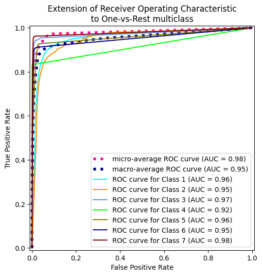
Ahora comparamos los mejores modelos de los grid search en cada metodo de balanceo
print("Accuracy on test set: {:.3f}".format(best_model.score(X_test, y_test)))
print("Accuracy on test set: {:.3f}".format(best_model_B.score(X_test, y_test)))
print("Accuracy on test set: {:.3f}".format(best_model_SM.score(X_test, y_test)))
print("Accuracy on test set: {:.3f}".format(best_model_ADA.score(X_test, y_test)))
LAUC_curvas(best_model, draw = False)
LAUC_curvas(best_model_B, draw = False)
LAUC_curvas(best_model_SM, draw = False)
LAUC_curvas(best_model_ADA, draw = False)
Accuracy on test set: 0.906
Accuracy on test set: 0.877
Accuracy on test set: 0.913
Accuracy on test set: 0.888
---------------------------------------------------------------------------
NameError Traceback (most recent call last)
<ipython-input-66-d6594d80510d> in <cell line: 0>()
4 print("Accuracy on test set: {:.3f}".format(best_model_ADA.score(X_test, y_test)))
5
----> 6 AUC_curvas(best_model, draw = False)
7 AUC_curvas(best_model_B, draw = False)
8 AUC_curvas(best_model_SM, draw = False)
NameError: name 'AUC_curvas' is not defined
tree = DecisionTreeClassifier(random_state = 42, criterion="entropy", max_depth=20, max_features = None)
start = time.process_time() # Inicia el contador de CPU time
tree.fit(X_train_SM, y_train_SM)
end = time.process_time() # Finaliza el contador de CPU time
print("Accuracy on training set: {:.3f}".format(tree.score(X_train_SM, y_train_SM)))
print("Accuracy on test set: {:.3f}".format(tree.score(X_test, y_test)))
print(f"CPU Time: {end - start} segundos")
Accuracy on training set: 0.979
Accuracy on test set: 0.913
CPU Time: 22.93443523299902 segundos
def plot_feature_importances(model):
n_features = 53
plt.figure(figsize=(10, 12))
plt.barh(range(n_features), model.feature_importances_, align='center')
plt.yticks(np.arange(n_features), X.columns, fontsize=9)
plt.xlabel("Feature importance")
plt.ylabel("Feature")
plot_feature_importances(tree)
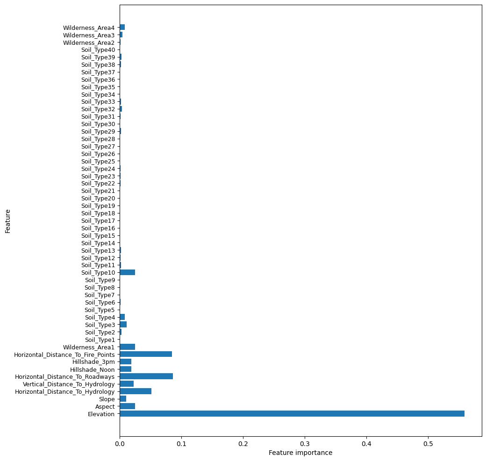
Random Forest#
from sklearn.ensemble import RandomForestClassifier
rTree = RandomForestClassifier(random_state = 42, n_jobs = -1)
pipeline = Pipeline([
('scaler', None),
('model', rTree)
])
param_grid = {
"model__n_estimators" : [50, 100],
"model__criterion" : ["gini", "entropy"],
"model__max_depth" : [10, 20, 30]
}
# Configurar Grid Search
grid_search = GridSearchCV(
estimator=pipeline,
param_grid=param_grid,
scoring="roc_auc_ovr", # Métrica de evaluación
cv=StratifiedKFold(5), # Validación cruzada de 5 folds
verbose=1
)
start = time.process_time() # Inicia el contador de CPU time
# Ejecutar Grid Search
grid_search.fit(X_train, y_train)
end = time.process_time() # Finaliza el contador de CPU time
print(f"CPU Time: {end - start} segundos")
# Mejores hiperparámetros
print("Mejores hiperparámetros:", grid_search.best_params_)
best_model = grid_search.best_estimator_
metricas(best_model)
LAUC_curvas(best_model)
Fitting 5 folds for each of 12 candidates, totalling 60 fits
CPU Time: 4550.147939477 segundos
Mejores hiperparámetros: {'model__criterion': 'entropy', 'model__max_depth': 30, 'model__n_estimators': 100}
Precisión: 95.59%
Matriz de confusión:
[[40050 2407 1 0 10 2 87]
[ 1147 55110 91 0 81 55 16]
[ 1 85 6892 21 4 118 0]
[ 0 0 62 450 0 14 0]
[ 24 361 15 0 1584 11 0]
[ 1 99 208 17 3 3161 0]
[ 158 24 0 0 1 0 3832]]
Reporte de clasificación:
precision recall f1-score support
1 0.97 0.94 0.95 42557
2 0.95 0.98 0.96 56500
3 0.95 0.97 0.96 7121
4 0.92 0.86 0.89 526
5 0.94 0.79 0.86 1995
6 0.94 0.91 0.92 3489
7 0.97 0.95 0.96 4015
accuracy 0.96 116203
macro avg 0.95 0.91 0.93 116203
weighted avg 0.96 0.96 0.96 116203
Micro-averaged One-vs-Rest ROC AUC score:
1.00
Macro-averaged One-vs-Rest ROC AUC score:
1.00
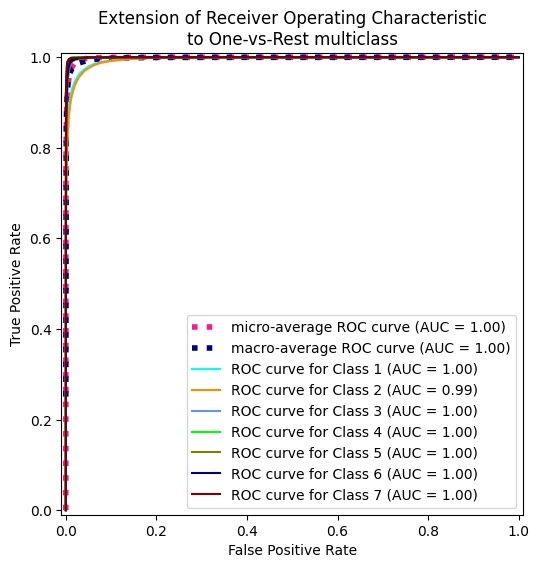
start = time.process_time() # Inicia el contador de CPU time
# Ejecutar Grid Search
grid_search.fit(X_train_SM, y_train_SM)
end = time.process_time() # Finaliza el contador de CPU time
print(f"CPU Time: {end - start} segundos")
# Mejores hiperparámetros
print("Mejores hiperparámetros:", grid_search.best_params_)
best_model_SM = grid_search.best_estimator_
metricas(best_model_SM)
LAUC_curvas(best_model_SM)
start = time.process_time() # Inicia el contador de CPU time
# Ejecutar Grid Search
grid_search.fit(X_train_ADA, y_train_ADA)
end = time.process_time() # Finaliza el contador de CPU time
print(f"CPU Time: {end - start} segundos")
# Mejores hiperparámetros
print("Mejores hiperparámetros:", grid_search.best_params_)
best_model_ADA = grid_search.best_estimator_
metricas(best_model_ADA)
LAUC_curvas(best_model_ADA)
rTree = RandomForestClassifier(random_state = 42, n_jobs = -1, class_weight = "balanced")
pipeline = Pipeline([
('scaler', None),
('model', rTree)
])
param_grid = {
"model__n_estimators" : [50, 100],
"model__criterion" : ["gini", "entropy"],
"model__max_depth" : [10, 20, 30]
}
# Configurar Grid Search
grid_search = GridSearchCV(
estimator=pipeline,
param_grid=param_grid,
scoring="roc_auc_ovr", # Métrica de evaluación
cv=StratifiedKFold(5), # Validación cruzada de 5 folds
verbose=1
)
start = time.process_time() # Inicia el contador de CPU time
# Ejecutar Grid Search
grid_search.fit(X_train, y_train)
end = time.process_time() # Finaliza el contador de CPU time
print(f"CPU Time: {end - start} segundos")
# Mejores hiperparámetros
print("Mejores hiperparámetros:", grid_search.best_params_)
# Evaluar el mejor modelo
best_model_B = grid_search.best_estimator_
metricas(best_model_B)
LAUC_curvas(best_model_B)
Fitting 5 folds for each of 12 candidates, totalling 60 fits
CPU Time: 4477.217686891 segundos
Mejores hiperparámetros: {'model__criterion': 'entropy', 'model__max_depth': 30, 'model__n_estimators': 100}
Precisión: 95.78%
Matriz de confusión:
[[40288 2157 1 0 21 3 87]
[ 1187 55006 102 0 120 68 17]
[ 3 75 6892 22 5 124 0]
[ 0 0 68 443 0 15 0]
[ 11 295 14 0 1665 10 0]
[ 1 85 215 22 4 3162 0]
[ 143 22 0 0 1 0 3849]]
Reporte de clasificación:
precision recall f1-score support
1 0.97 0.95 0.96 42557
2 0.95 0.97 0.96 56500
3 0.95 0.97 0.96 7121
4 0.91 0.84 0.87 526
5 0.92 0.83 0.87 1995
6 0.93 0.91 0.92 3489
7 0.97 0.96 0.97 4015
accuracy 0.96 116203
macro avg 0.94 0.92 0.93 116203
weighted avg 0.96 0.96 0.96 116203
Micro-averaged One-vs-Rest ROC AUC score:
1.00
Macro-averaged One-vs-Rest ROC AUC score:
1.00
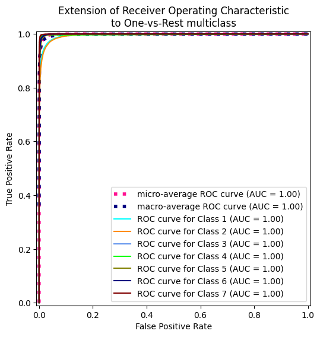
# Entrenar modelo
rTree = RandomForestClassifier(random_state = 42, n_estimators = 100, n_jobs = -1, criterion = "entropy", max_depth=30, class_weight='balanced')
start = time.process_time() # Inicia el contador de CPU time
rTree.fit(X_train, y_train)
end = time.process_time() # Finaliza el contador de CPU time
print("Accuracy on training set: {:.3f}".format(rTree.score(X_train, y_train)))
print("Accuracy on test set: {:.3f}".format(rTree.score(X_test, y_test)))
print(f"CPU Time: {end - start} segundos")
# Evaluar
y_pred = rTree.predict(X_test)
print(classification_report(y_test, y_pred))
Accuracy on training set: 1.000
Accuracy on test set: 0.958
CPU Time: 166.9745299669994 segundos
precision recall f1-score support
1 0.97 0.95 0.96 42557
2 0.95 0.97 0.96 56500
3 0.95 0.97 0.96 7121
4 0.91 0.84 0.87 526
5 0.92 0.83 0.87 1995
6 0.93 0.91 0.92 3489
7 0.97 0.96 0.97 4015
accuracy 0.96 116203
macro avg 0.94 0.92 0.93 116203
weighted avg 0.96 0.96 0.96 116203
plot_feature_importances(rTree)
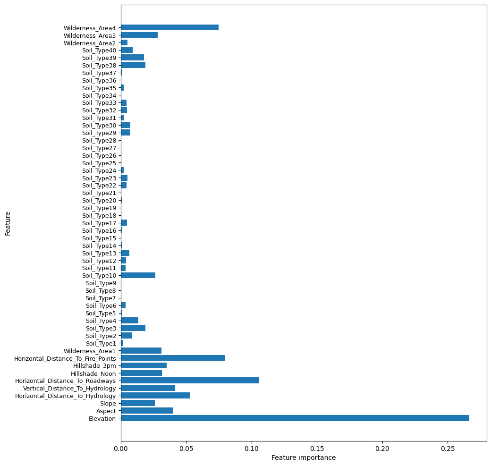
SVM#
from sklearn.svm import SVC
from sklearn.svm import LinearSVC
from sklearn.pipeline import Pipeline
from sklearn.feature_selection import SelectKBest, f_classif
from sklearn.preprocessing import StandardScaler
from sklearn.metrics import make_scorer
# 1. Definir el pipeline completo
pipeline = Pipeline([
('scaler', StandardScaler()), # Escalado de características
('feature_selection', SelectKBest()), # Selección de características
('classifier', LinearSVC(dual=False, random_state=42)) # LinearSVC (dual=False para n_samples > n_features)
])
# 2. Definir el espacio de búsqueda de hiperparámetros
param_grid = {
'feature_selection__k': ['all'], # Número de características a seleccionar
'feature_selection__score_func': [f_classif], # Función para selección de características
'classifier__C': [0.001, 0.01, 0.1, 1, 10, 100], # Parámetro de regularización
'classifier__penalty': ['l1', 'l2'], # Tipo de penalización
'classifier__loss': ['squared_hinge'], # Función de pérdida
'classifier__max_iter': [1000] # Máximo de iteraciones
}
# 4. Configurar GridSearchCV
grid_search = GridSearchCV(
estimator=pipeline,
param_grid=param_grid,
scoring="roc_auc_ovr",
refit='roc_auc_ovr', # Métrica principal para seleccionar el mejor modelo
cv=5, # 5-fold cross-validation
n_jobs=-1, # Usar todos los cores disponibles
verbose=2 # Mostrar progreso detallado
)
# 5. Ejecutar la búsqueda en los datos de entrenamiento
grid_search.fit(X_train, y_train)
# 6. Resultados
print("\nMejores parámetros encontrados:")
print(grid_search.best_params_)
print("\nMejor score de validación cruzada (AUC):")
print(f"{grid_search.best_score_:.4f}")
# 7. Evaluar en el conjunto de prueba
y_pred = grid_search.predict(X_test)
y_decision = grid_search.decision_function(X_test) # Scores para calcular AUC
print("\nMétricas en conjunto de prueba:")
print(f"Accuracy: {accuracy_score(y_test, y_pred):.4f}")
print(f"AUC: {roc_auc_score(y_test, y_decision):.4f}")
# 8. Obtener el mejor modelo
best_model = grid_search.best_estimator_
Fitting 5 folds for each of 12 candidates, totalling 60 fits
---------------------------------------------------------------------------
KeyboardInterrupt Traceback (most recent call last)
<ipython-input-23-3410a4b3922e> in <cell line: 0>()
33
34 # 5. Ejecutar la búsqueda en los datos de entrenamiento
---> 35 grid_search.fit(X_train, y_train)
36
37 # 6. Resultados
/usr/local/lib/python3.11/dist-packages/sklearn/base.py in wrapper(estimator, *args, **kwargs)
1387 )
1388 ):
-> 1389 return fit_method(estimator, *args, **kwargs)
1390
1391 return wrapper
/usr/local/lib/python3.11/dist-packages/sklearn/model_selection/_search.py in fit(self, X, y, **params)
1022 return results
1023
-> 1024 self._run_search(evaluate_candidates)
1025
1026 # multimetric is determined here because in the case of a callable
/usr/local/lib/python3.11/dist-packages/sklearn/model_selection/_search.py in _run_search(self, evaluate_candidates)
1569 def _run_search(self, evaluate_candidates):
1570 """Search all candidates in param_grid"""
-> 1571 evaluate_candidates(ParameterGrid(self.param_grid))
1572
1573
/usr/local/lib/python3.11/dist-packages/sklearn/model_selection/_search.py in evaluate_candidates(candidate_params, cv, more_results)
968 )
969
--> 970 out = parallel(
971 delayed(_fit_and_score)(
972 clone(base_estimator),
/usr/local/lib/python3.11/dist-packages/sklearn/utils/parallel.py in __call__(self, iterable)
75 for delayed_func, args, kwargs in iterable
76 )
---> 77 return super().__call__(iterable_with_config)
78
79
/usr/local/lib/python3.11/dist-packages/joblib/parallel.py in __call__(self, iterable)
2005 next(output)
2006
-> 2007 return output if self.return_generator else list(output)
2008
2009 def __repr__(self):
/usr/local/lib/python3.11/dist-packages/joblib/parallel.py in _get_outputs(self, iterator, pre_dispatch)
1648
1649 with self._backend.retrieval_context():
-> 1650 yield from self._retrieve()
1651
1652 except GeneratorExit:
/usr/local/lib/python3.11/dist-packages/joblib/parallel.py in _retrieve(self)
1760 (self._jobs[0].get_status(
1761 timeout=self.timeout) == TASK_PENDING)):
-> 1762 time.sleep(0.01)
1763 continue
1764
KeyboardInterrupt:
X_t, X_valid, y_t, y_valid = train_test_split(X_train_sc, y_train, random_state=42)
metricas(Lsvm, scaled = True)
LAUC_curvas(Lsvm, linScv = True)
Precisión: 68.25%
Matriz de confusión:
[[28644 9706 37 0 507 328 3335]
[11619 39629 1431 3 1723 1833 262]
[ 0 324 5148 169 54 1426 0]
[ 0 0 255 220 0 51 0]
[ 38 1042 185 0 646 84 0]
[ 0 367 1247 68 95 1712 0]
[ 665 20 17 0 0 0 3313]]
Reporte de clasificación:
precision recall f1-score support
1 0.70 0.67 0.69 42557
2 0.78 0.70 0.74 56500
3 0.62 0.72 0.67 7121
4 0.48 0.42 0.45 526
5 0.21 0.32 0.26 1995
6 0.32 0.49 0.38 3489
7 0.48 0.83 0.61 4015
accuracy 0.68 116203
macro avg 0.51 0.59 0.54 116203
weighted avg 0.70 0.68 0.69 116203
Micro-averaged One-vs-Rest ROC AUC score:
0.93
Macro-averaged One-vs-Rest ROC AUC score:
0.92

X_t_SM, X_valid_SM, y_t_SM, y_valid_SM = train_test_split(X_train_SM_sc, y_train, random_state=42)
best_score_SM = 0
for C in [0.001, 0.01, 0.1, 1, 10, 100]:
Lsvm = LinearSVC(C=C)
Lsvm.fit(X_t, y_t) # Ajuste del modelo SVC
score = Lsvm.score(X_valid, y_valid) # Score para selección de parámetros
if score > best_score_B:
best_score_B = score
best_parameters_B = {'C': C} # Almacenamos el mejor score y sus parámetros
print("Modelo terminado")
---------------------------------------------------------------------------
TypeError Traceback (most recent call last)
C:\Users\ALEJAN~1\AppData\Local\Temp/ipykernel_13328/3708953658.py in <module>
1 best_score_B = 0
2 for C in [0.001, 0.01, 0.1, 1, 10, 100]:
----> 3 Lsvm = LinearSVC(C=C, train_weight = "balanced")
4 Lsvm.fit(X_t, y_t) # Ajuste del modelo SVC
5 score = Lsvm.score(X_valid, y_valid) # Score para selección de parámetros
TypeError: __init__() got an unexpected keyword argument 'train_weight'
best_score = 0
for C in [0.001, 0.01, 0.1, 1, 10, 100]:
Lsvm = LinearSVC(C=C)
Lsvm.fit(X_t, y_t) # Ajuste del modelo SVC
score = Lsvm.score(X_valid, y_valid) # Score para selección de parámetros
if score > best_score:
best_score = score
best_parameters = {'C': C} # Almacenamos el mejor score y sus parámetros
print("Modelo terminado")
Modelo terminado
Modelo terminado
Modelo terminado
Modelo terminado
Modelo terminado
Modelo terminado
print(best_score)
print(best_parameters)
0.7146545269915578
{'C': 1}
Lsvm = LinearSVC
svm = SVC(random_state = 42)
param_grid = {
"gamma": [0.001, 0.01, 0.1, 1, 10, 100],
"C": [0.001, 0.01, 0.1, 1, 10, 100],
}
# Configurar Grid Search
grid_search = GridSearchCV(
estimator=tree,
param_grid=param_grid,
scoring="accuracy", # Métrica de evaluación
cv=5, # Validación cruzada de 5 folds
n_jobs=-1, # Usar todos los núcleos de la CPU
)
start = time.process_time() # Inicia el contador de CPU time
# Ejecutar Grid Search
grid_search.fit(X_train, y_train)
end = time.process_time() # Finaliza el contador de CPU time
print(f"CPU Time: {end - start} segundos")
# Mejores hiperparámetros
print("Mejores hiperparámetros:", grid_search.best_params_)
# Evaluar el mejor modelo
best_model = grid_search.best_estimator_
metricas(best_model)
LAUC_curvas(best_model)
XgBoost#
from xgboost import XGBClassifier
from sklearn.preprocessing import LabelEncoder
le = LabelEncoder()
le_y_train = le.fit_transform(y_train)
le_y_test = le.transform(y_test)
le_y_train_SM = le.fit_transform(y_train_SM)
le_y_train_ADA = le.transform(y_train_ADA)
xgb = XGBClassifier(random_state=42, tree_method='gpu_hist', use_label_encoder=False, verbosity=2)
pipeline = Pipeline([
('scaler', None), # Escalado de características
('xgb', xgb), # Selección de características
])
param_grid = {
'xgb__n_estimators': [50, 100],
'xgb__max_depth':[6, 7, 8],
'xgb__learning_rate': [0.1, 0.2, 0.3]
}
grid_search = GridSearchCV(
estimator=pipeline,
param_grid=param_grid,
scoring='roc_auc_ovr',
cv=StratifiedKFold(5),
n_jobs=-1,
verbose=2
)
grid_search.fit(X_train, le_y_train)
# Mejores hiperparámetros
print("Mejores hiperparámetros:", grid_search.best_params_)
# Evaluar el mejor modelo
best_model = grid_search.best_estimator_
metricas(best_model)
LAUC_curvas(best_model)
Fitting 5 folds for each of 18 candidates, totalling 90 fits
---------------------------------------------------------------------------
KeyboardInterrupt Traceback (most recent call last)
<ipython-input-52-1e90affc5d83> in <cell line: 0>()
----> 1 grid_search.fit(X_train, le_y_train)
2
3 # Mejores hiperparámetros
4 print("Mejores hiperparámetros:", grid_search.best_params_)
5
/usr/local/lib/python3.11/dist-packages/sklearn/base.py in wrapper(estimator, *args, **kwargs)
1387 )
1388 ):
-> 1389 return fit_method(estimator, *args, **kwargs)
1390
1391 return wrapper
/usr/local/lib/python3.11/dist-packages/sklearn/model_selection/_search.py in fit(self, X, y, **params)
1022 return results
1023
-> 1024 self._run_search(evaluate_candidates)
1025
1026 # multimetric is determined here because in the case of a callable
/usr/local/lib/python3.11/dist-packages/sklearn/model_selection/_search.py in _run_search(self, evaluate_candidates)
1569 def _run_search(self, evaluate_candidates):
1570 """Search all candidates in param_grid"""
-> 1571 evaluate_candidates(ParameterGrid(self.param_grid))
1572
1573
/usr/local/lib/python3.11/dist-packages/sklearn/model_selection/_search.py in evaluate_candidates(candidate_params, cv, more_results)
968 )
969
--> 970 out = parallel(
971 delayed(_fit_and_score)(
972 clone(base_estimator),
/usr/local/lib/python3.11/dist-packages/sklearn/utils/parallel.py in __call__(self, iterable)
75 for delayed_func, args, kwargs in iterable
76 )
---> 77 return super().__call__(iterable_with_config)
78
79
/usr/local/lib/python3.11/dist-packages/joblib/parallel.py in __call__(self, iterable)
2069 next(output)
2070
-> 2071 return output if self.return_generator else list(output)
2072
2073 def __repr__(self):
/usr/local/lib/python3.11/dist-packages/joblib/parallel.py in _get_outputs(self, iterator, pre_dispatch)
1679
1680 with self._backend.retrieval_context():
-> 1681 yield from self._retrieve()
1682
1683 except GeneratorExit:
/usr/local/lib/python3.11/dist-packages/joblib/parallel.py in _retrieve(self)
1797 self._jobs[0].get_status(timeout=self.timeout) == TASK_PENDING
1798 ):
-> 1799 time.sleep(0.01)
1800 continue
1801
KeyboardInterrupt:
xgb.fit(X_train, le_y_train)
metricas(xgb)
LAUC_curvas(xgb)
Precisión: 86.71%
Matriz de confusión:
[[35667 6621 2 0 15 6 246]
[ 5426 50584 202 0 111 152 25]
[ 2 266 6500 32 1 320 0]
[ 0 0 54 454 0 18 0]
[ 26 803 31 0 1124 11 0]
[ 1 213 459 16 1 2799 0]
[ 363 18 0 0 0 0 3634]]
Reporte de clasificación:
precision recall f1-score support
0 0.86 0.84 0.85 42557
1 0.86 0.90 0.88 56500
2 0.90 0.91 0.90 7121
3 0.90 0.86 0.88 526
4 0.90 0.56 0.69 1995
5 0.85 0.80 0.82 3489
6 0.93 0.91 0.92 4015
accuracy 0.87 116203
macro avg 0.89 0.83 0.85 116203
weighted avg 0.87 0.87 0.87 116203
Micro-averaged One-vs-Rest ROC AUC score:
0.99
Macro-averaged One-vs-Rest ROC AUC score:
0.99
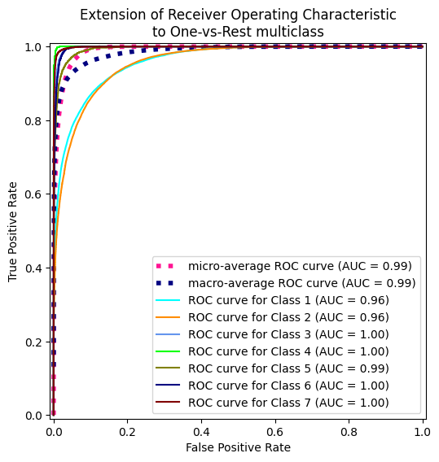